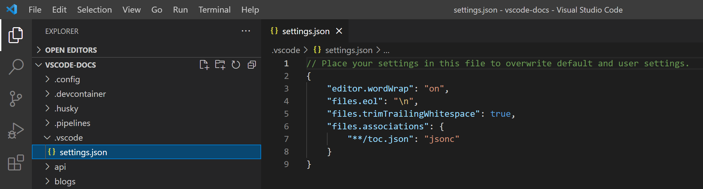
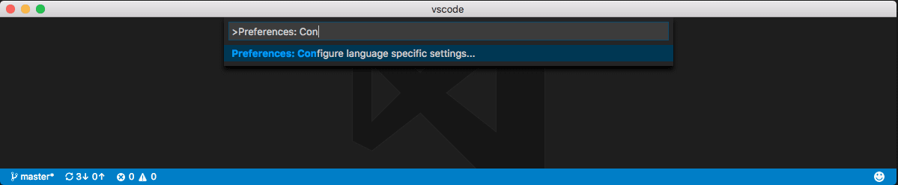

User and Workspace Settings
You can configure Visual Studio Code to your liking through its various settings. Nearly every part of VS Code's editor, user interface, and functional behavior has options you can modify.
VS Code provides several different scopes for settings. When you open a workspace, you will see at least the following two scopes:
- User Settings - Settings that apply globally to any instance of VS Code you open.
- Workspace Settings - Settings stored inside your workspace and only apply when the workspace is opened.
In this article, we'll first describe user settings as these are your personal settings for customizing VS Code. Later we'll cover Workspace settings, which will be specific to the project you're working on.
Settings editor
To modify user settings, you'll use the Settings editor to review and change VS Code settings.
To open the Settings editor, use the following VS Code menu command:
- On Windows/Linux - File > Preferences > Settings
- On macOS - Code > Preferences > Settings
You can also open the Settings editor from the Command Palette (P (Windows, Linux Ctrl+Shift+P)) with Preferences: Open Settings or use the keyboard shortcut (, (Windows, Linux Ctrl+,)).
When you open the Settings editor, you can search and discover the settings you are looking for. When you search using the Search bar, it will not only show and highlight the settings matching your criteria, but also filter out those which are not matching. This makes finding settings quick and easy.

In the example below, the Side Bar location and file icon theme have been changed.

Changes to settings are applied by VS Code as you change them. Modified settings are indicated with a blue line similar to modified lines in the editor.
The gear icon (More Actions... F9 (Windows, Linux Shift+F9)) opens a context menu with options to reset the setting to its default value as well as copy the setting ID or JSON name-value pair.

Edit settings
Each setting can be edited by either a checkbox, an input or a dropdown. Edit the text or select the option you want to change to the desired settings.

Settings groups
Settings are represented in groups so that you can navigate them easily. There is a Commonly Used group at the top, which shows popular customizations.
Below, the Source Control settings are focused by selecting Source Control in the tree view.

Note: VS Code extensions can also add their own custom settings, and those settings will be visible under an Extensions section.
Changing a setting
As an example, let's hide the Activity Bar from VS Code. The Activity Bar is the wide border on the left with various icons for different views such as the File Explorer, Search, Source Control, and Extensions. You might want to hide the Activity Bar to give the editor a little more room, or if you prefer to open views via the View menu or Command Palette.
Open the Settings Editor (, (Windows, Linux Ctrl+,)) and type "activity" in the Search bar. You should see at least five settings.
You can further limit the scope to just those settings under the Appearance group in the table of contents on the left. There should now be just three settings.
You can now check and uncheck the Workbench > Activity Bar: Visible setting to hide and unhide the Activity Bar. Notice that when you have changed the setting value to be different than the default value, you see a blue line to the left.
You can always reset a setting to the default value by hovering over a setting to show the gear icon, clicking on the gear icon, and then selecting the Reset Setting action.
Settings editor filters
The Settings editor Search bar has several filters to make it easier to manage your settings. To the right of the Search bar is a filter button with a funnel icon that provides some options to easily add a filter to the Search bar.
Modified settings
To check which settings you have configured, there is a @modified filter in the Search bar. A setting shows up under this filter if its value differs from the default value, or if its value is explicitly set in the respective settings JSON file. This filter can be useful if you have forgotten whether you configured a setting, or if the editor is not behaving as you expect because you accidentally configured a setting.

Other filters
There are several other handy filters to help with searching through settings.

Here are some of the filters available:
@ext- Settings specific to an extension. You provide the extension ID such as@ext:ms-python.python.@feature- Settings specific to a Features subgroup. For example,@feature:explorershows settings of the File Explorer.@id- Find a setting based on the setting ID. For example,@id:workbench.activityBar.visible.@lang- Apply a language filter based on a language ID. For example,@lang:typescript. See Language-specific editor settings for more details.@tag- Settings specific to a system of VS Code. For example,@tag:workspaceTrustfor settings related to Workspace Trust, or@tag:accessibilityfor settings related to accessibility.
The Search bar remembers your settings search queries and supports Undo/Redo (Z (Windows, Linux Ctrl+Z)/Z (Windows, Linux Ctrl+Y)). You can quickly clear a search term or filter with the Clear Settings Search Input button at the right of the Search bar.
Extension settings
Installed VS Code extensions can also contribute their own settings, which you can review under the Extensions section of the Settings editor.

You can also review an extension's settings from the Extensions view (X (Windows, Linux Ctrl+Shift+X)) by selecting the extension and reviewing the Feature Contributions tab.

Extension authors can learn more about adding custom settings in the configuration contribution point documentation.
settings.json
The Settings editor is the UI that lets you review and modify setting values that are stored in a settings.json file. You can review and edit this file directly by opening it in the editor with the Preferences: Open Settings (JSON) command. Settings are written as JSON by specifying the setting ID and value.

The settings.json file has full IntelliSense with smart completions for settings and values and description hovers. Errors due to incorrect setting names or JSON formatting are also highlighted.

Some settings can only be edited in settings.json such as Workbench: Color Customizations and show a Edit in settings.json link in the Settings editor.

Changing settings.json
As an example, lets change the editor line number color. Click the Edit in settings.json link and add the following JSON:
"workbench.colorCustomizations": {
"editorLineNumber.foreground": "#00ff00"
}
Here the line numbers in the editor for the settings.json file are now green.
Remove the workbench.colorCustomizations setting code block to return the line number color to the default.
Note: The example above changes the editor line number for all Color Themes, but you can tune colors per specific Color Theme or even create your own Color Theme extension.
If you prefer to always work directly with settings.json, you can set "workbench.settings.editor": "json" so that File > Preferences > Settings and the keybinding , (Windows, Linux Ctrl+,) always opens the settings.json file and not the Setting editor UI.
Settings file locations
Depending on your platform, the user settings file is located here:
- Windows
%APPDATA%\Code\User\settings.json - macOS
$HOME/Library/Application\ Support/Code/User/settings.json - Linux
$HOME/.config/Code/User/settings.json
Reset all settings
While you can reset settings individually via the Settings editor Reset Setting command, you can reset all changed settings by opening settings.json and deleting the entries between the braces {}. Be careful since there will be no way to recover your previous setting values.
Workspace settings
Workspace settings are specific to a project and can be shared across developers on a project. Workspace settings override user settings.
Note: A VS Code "workspace" is usually just your project root folder. Workspace settings as well as debugging and task configurations are stored at the root in a
.vscodefolder. You can also have more than one root folder in a VS Code workspace through a feature called Multi-root workspaces. You can learn more in the What is a VS Code "workspace"? article.
You can edit via the Settings editor Workspace tab or open that tab directly with the Preferences: Open Workspace Settings command.

All features of the Settings editor such as settings groups, search, and filtering behave the same for Workspace settings. Not all User settings are available as Workspace settings. For example, application-wide settings related to updates and security can not be overridden by Workspace settings.
Workspace settings.json location
Similar to User Settings, Workspace Settings are also stored in a settings.json file, which you can edit directly via the Preferences: Open Workspace Settings (JSON) command.
The workspace settings file is located under the .vscode folder in your root folder.

Note: For a Multi-root Workspace, workspace settings are located inside the workspace configuration file.
When you add a Workspace Settings settings.json file to your project or source control, the settings for the project will be shared by all users of that project.
Language specific editor settings
One way to customize language-specific settings is by opening the Settings editor, pressing on the filter button, and selecting the language option to add a language filter. Alternatively, one can directly type a language filter of the form @lang:languageId into the search widget. The settings that show up will be configurable for that specific language, and will show the setting value specific to that language, if applicable.
When modifying a setting while there is a language filter in place, the setting will be configured in the given scope for that language.
For example, when modifying the user-scope diffEditor.codeLens setting while there is a @lang:css filter in the search widget, the Settings editor will save the new value to the CSS-specific section of the user settings file.

Note: If you enter more than one language filter in the search widget, the current behaviour is that only the first language filter will be used.
Another way to customize your editor by language is by running the global command Preferences: Configure Language Specific Settings (command ID: workbench.action.configureLanguageBasedSettings) from the Command Palette (P (Windows, Linux Ctrl+Shift+P)) which opens the language picker. Select the language you want. Then, the Settings editor opens with a language filter for the selected language, which allows you to modify language-specific settings for that language. Though, if you have the workbench.settings.editor setting set to json, then the settings.json file opens with a new language entry where you can add applicable settings.

Select the language via the dropdown:

Now you can start editing settings specifically for that language:

Or, if workbench.settings.editor is set to json, now you can start adding language-specific settings to your user settings:

If you have a file open and you want to customize the editor for this file type, select the Language Mode in the Status Bar to the bottom-right of the VS Code window. This opens the Language Mode picker with an option Configure 'language_name' language based settings. Selecting this opens your user settings.json with the language entry where you can add applicable settings.
Language-specific editor settings always override non-language-specific editor settings, even if the non-language-specific setting has a narrower scope. For example, language-specific user settings override non-language-specific workspace settings.
You can scope language-specific settings to the workspace by placing them in the workspace settings just like other settings. If you have settings defined for the same language in both user and workspace scopes, then they are merged by giving precedence to the ones defined in the workspace.
The following example can be pasted into a settings JSON file to customize editor settings for the typescript and markdown language modes.
{
"[typescript]": {
"editor.formatOnSave": true,
"editor.formatOnPaste": true
},
"[markdown]": {
"editor.formatOnSave": true,
"editor.wordWrap": "on",
"editor.renderWhitespace": "all",
"editor.acceptSuggestionOnEnter": "off"
}
}
You can use IntelliSense in settings.json to help you find language-specific settings. All editor settings and some non-editor settings are supported. Some languages have default language-specific settings already set, which you can review in defaultSettings.json by running the Preferences: Open Default Settings command.
Settings precedence
Configurations can be overridden at multiple levels by the different setting scopes. In the following list, later scopes override earlier scopes:
- Default settings - This scope represents the default unconfigured setting values.
- User settings - Apply globally to all VS Code instances.
- Remote settings - Apply to a remote machine opened by a user.
- Workspace settings - Apply to the open folder or workspace.
- Workspace Folder settings - Apply to a specific folder of a multi-root workspace.
- Language-specific default settings - These are language-specific default values that can be contributed by extensions.
- Language-specific user settings - Same as User settings, but specific to a language.
- Language-specific remote settings - Same as Remote settings, but specific to a language.
- Language-specific workspace settings - Same as Workspace settings, but specific to a language.
- Language-specific workspace folder settings - Same as Workspace Folder settings, but specific to a language.
- Policy settings - Set by the system administrator, these values always override other setting values.
Setting values can be of various types:
- String -
"files.autoSave": "afterDelay" - Boolean -
"editor.minimap.enabled": true - Number -
"files.autoSaveDelay": 1000 - Array -
"editor.rulers": [] - Object -
"search.exclude": { "**/node_modules": true, "**/bower_components": true }
Values with primitive types and Array types are overridden, meaning a configured value in a scope that takes precedence over another scope is used instead of the value in the other scope. But, values with Object types are merged.
For example, workbench.colorCustomizations takes an Object that specifies a group of UI elements and their desired colors. If your user settings set the editor backgrounds to blue and green:
"workbench.colorCustomizations": {
"editor.background": "#000088",
"editor.selectionBackground": "#008800"
}
And your open workspace settings set the editor foreground to red:
"workbench.colorCustomizations": {
"editor.foreground": "#880000",
"editor.selectionBackground": "#00FF00"
}
The result, when that workspace is open, is the combination of those two color customizations, as if you had specified:
"workbench.colorCustomizations": {
"editor.background": "#000088",
"editor.selectionBackground": "#00FF00",
"editor.foreground": "#880000"
}
If there are conflicting values, such as editor.selectionBackground in the example above, the usual override behavior occurs, with workspace values taking precedence over user values, and language-specific values taking precedence over non-language-specific values.
Settings and security
Some settings allow you to specify an executable that VS Code will run to perform certain operations. For example, you can choose which shell the Integrated Terminal should use. For enhanced security, such settings can only be defined in user settings and not at workspace scope.
Here is the list of settings not supported in workspace settings:
git.pathterminal.external.windowsExecterminal.external.osxExecterminal.external.linuxExec
The first time you open a workspace that defines any of these settings, VS Code will warn you and then always ignore the values after that.
Settings Sync
You can share your user settings across your VS Code instances with the Settings Sync feature. This feature lets you share settings, keyboard shortcuts, and installed extensions across your VS Code installs on various machines. You can enable Settings Sync via the Turn on Settings Sync command on the right of the Settings editor or on the Accounts Activity Bar context menu.
You can learn more about turning on and configuring Settings Sync in the Settings Sync user guide.
Common questions
VS Code says "Unable to write settings."
If you try to change a setting (for example turning on Auto Save or selecting a new Color Theme) and you see "Unable to write into user settings. Please open user settings to correct errors/warnings in it and try again.", it means your settings.json file is ill-formed or has errors. The error can be as simple as a missing comma or incorrect setting value. Open the settings.json file with the Preferences: Open Settings (JSON) command and you should see the error highlighted with red squiggles.
How can I reset my user settings?
The easiest way to reset VS Code back to the default settings is to clear your user settings.json file. You can open the settings.json file with the Preferences: Open Settings (JSON) command in the Command Palette (P (Windows, Linux Ctrl+Shift+P)). Once the file is open in an editor, delete everything between the two curly braces {}, save the file, and VS Code will go back to using the default values.
When does it make sense to use workspace settings?
If you're using a workspace that needs custom settings but you don't want to apply them to your other VS Code projects. A good example is language-specific linting rules.
Where can I find extension settings?
In general, VS Code extensions store their settings in your user or workspaces settings files and they are available through the Settings editor UI (Preferences: Open Settings (UI)) or via IntelliSense in your settings.json file (Preferences: Open Settings (JSON)). Searching by the extension name (for example gitlens or python) can help filter down settings to just those contributed by an extension.
Default settings
Below are the Visual Studio Code default settings and their values. You can also view the default values in the Settings editor or see a read-only version of the defaultSettings.json via Preferences: Open Default Settings (JSON).
{
// Editor
// Controls whether the editor shows CodeLens.
"diffEditor.codeLens": false,
// When enabled, the diff editor ignores changes in leading or trailing whitespace.
"diffEditor.ignoreTrimWhitespace": true,
// Timeout in milliseconds after which diff computation is cancelled. Use 0 for no timeout.
"diffEditor.maxComputationTime": 5000,
// Controls whether the diff editor shows +/- indicators for added/removed changes.
"diffEditor.renderIndicators": true,
// When enabled, the diff editor shows arrows in its glyph margin to revert changes.
"diffEditor.renderMarginRevertIcon": true,
// Controls whether the diff editor shows the diff side by side or inline.
"diffEditor.renderSideBySide": true,
// - off: Lines will never wrap.
// - on: Lines will wrap at the viewport width.
// - inherit: Lines will wrap according to the `editor.wordWrap` setting.
"diffEditor.wordWrap": "inherit",
// Controls whether suggestions should be accepted on commit characters. For example, in JavaScript, the semi-colon (`; `) can be a commit character that accepts a suggestion and types that character.
"editor.acceptSuggestionOnCommitCharacter": true,
// Controls whether suggestions should be accepted on `Enter`, in addition to `Tab`. Helps to avoid ambiguity between inserting new lines or accepting suggestions.
// - on
// - smart: Only accept a suggestion with `Enter` when it makes a textual change.
// - off
"editor.acceptSuggestionOnEnter": "on",
// Controls whether the editor should run in a mode where it is optimized for screen readers.
// - auto: The editor will use platform APIs to detect when a Screen Reader is attached.
// - on: The editor will be permanently optimized for usage with a Screen Reader. Word wrapping will be disabled.
// - off: The editor will never be optimized for usage with a Screen Reader.
"editor.accessibilitySupport": "auto",
// Controls whether the editor should automatically close brackets after the user adds an opening bracket.
// - always
// - languageDefined: Use language configurations to determine when to autoclose brackets.
// - beforeWhitespace: Autoclose brackets only when the cursor is to the left of whitespace.
// - never
"editor.autoClosingBrackets": "languageDefined",
// Controls whether the editor should remove adjacent closing quotes or brackets when deleting.
// - always
// - auto: Remove adjacent closing quotes or brackets only if they were automatically inserted.
// - never
"editor.autoClosingDelete": "auto",
// Controls whether the editor should type over closing quotes or brackets.
// - always
// - auto: Type over closing quotes or brackets only if they were automatically inserted.
// - never
"editor.autoClosingOvertype": "auto",
// Controls whether the editor should automatically close quotes after the user adds an opening quote.
// - always
// - languageDefined: Use language configurations to determine when to autoclose quotes.
// - beforeWhitespace: Autoclose quotes only when the cursor is to the left of whitespace.
// - never
"editor.autoClosingQuotes": "languageDefined",
// Controls whether the editor should automatically adjust the indentation when users type, paste, move or indent lines.
// - none: The editor will not insert indentation automatically.
// - keep: The editor will keep the current line's indentation.
// - brackets: The editor will keep the current line's indentation and honor language defined brackets.
// - advanced: The editor will keep the current line's indentation, honor language defined brackets and invoke special onEnterRules defined by languages.
// - full: The editor will keep the current line's indentation, honor language defined brackets, invoke special onEnterRules defined by languages, and honor indentationRules defined by languages.
"editor.autoIndent": "full",
// Controls whether the editor should automatically surround selections when typing quotes or brackets.
// - languageDefined: Use language configurations to determine when to automatically surround selections.
// - quotes: Surround with quotes but not brackets.
// - brackets: Surround with brackets but not quotes.
// - never
"editor.autoSurround": "languageDefined",
// Controls whether bracket pair colorization is enabled or not. Use `workbench.colorCustomizations` to override the bracket highlight colors.
"editor.bracketPairColorization.enabled": true,
// Controls whether each bracket type has its own independent color pool.
"editor.bracketPairColorization.independentColorPoolPerBracketType": false,
// Code Action kinds to be run on save.
"editor.codeActionsOnSave": {},
// Enable/disable showing group headers in the Code Action menu.
"editor.codeActionWidget.showHeaders": true,
// Controls whether the editor shows CodeLens.
"editor.codeLens": true,
// Controls the font family for CodeLens.
"editor.codeLensFontFamily": "",
// Controls the font size in pixels for CodeLens. When set to 0, 90% of `editor.fontSize` is used.
"editor.codeLensFontSize": 0,
// Controls whether the editor should render the inline color decorators and color picker.
"editor.colorDecorators": true,
// Enable that the selection with the mouse and keys is doing column selection.
"editor.columnSelection": false,
// Controls if empty lines should be ignored with toggle, add or remove actions for line comments.
"editor.comments.ignoreEmptyLines": true,
// Controls whether a space character is inserted when commenting.
"editor.comments.insertSpace": true,
// Controls whether syntax highlighting should be copied into the clipboard.
"editor.copyWithSyntaxHighlighting": true,
// Control the cursor animation style.
"editor.cursorBlinking": "blink",
// Controls whether the smooth caret animation should be enabled.
"editor.cursorSmoothCaretAnimation": false,
// Controls the cursor style.
"editor.cursorStyle": "line",
// Controls the minimal number of visible leading and trailing lines surrounding the cursor. Known as 'scrollOff' or 'scrollOffset' in some other editors.
"editor.cursorSurroundingLines": 0,
// Controls when `cursorSurroundingLines` should be enforced.
// - default: `cursorSurroundingLines` is enforced only when triggered via the keyboard or API.
// - all: `cursorSurroundingLines` is enforced always.
"editor.cursorSurroundingLinesStyle": "default",
// Controls the width of the cursor when `editor.cursorStyle` is set to `line`.
"editor.cursorWidth": 0,
// Defines a default folding range provider that takes precedence over all other folding range provider. Must be the identifier of an extension contributing a folding range providers.
"editor.defaultFoldingRangeProvider": null,
// Defines a default formatter which takes precedence over all other formatter settings. Must be the identifier of an extension contributing a formatter.
"editor.defaultFormatter": null,
// Controls whether the Go to Definition mouse gesture always opens the peek widget.
"editor.definitionLinkOpensInPeek": false,
// Controls whether `editor.tabSize#` and `#editor.insertSpaces` will be automatically detected when a file is opened based on the file contents.
"editor.detectIndentation": true,
// Controls whether the editor should allow moving selections via drag and drop.
"editor.dragAndDrop": true,
// Controls whether you can drag and drop a file into a text editor by holding down `shift` (instead of opening the file in an editor).
"editor.dropIntoEditor.enabled": true,
// Controls whether copying without a selection copies the current line.
"editor.emptySelectionClipboard": true,
// Scrolling speed multiplier when pressing `Alt`.
"editor.fastScrollSensitivity": 5,
// Controls whether the Find Widget should add extra lines on top of the editor. When true, you can scroll beyond the first line when the Find Widget is visible.
"editor.find.addExtraSpaceOnTop": true,
// Controls the condition for turning on Find in Selection automatically.
// - never: Never turn on Find in Selection automatically (default).
// - always: Always turn on Find in Selection automatically.
// - multiline: Turn on Find in Selection automatically when multiple lines of content are selected.
"editor.find.autoFindInSelection": "never",
// Controls whether the cursor should jump to find matches while typing.
"editor.find.cursorMoveOnType": true,
// Controls whether the Find Widget should read or modify the shared find clipboard on macOS.
"editor.find.globalFindClipboard": false,
// Controls whether the search automatically restarts from the beginning (or the end) when no further matches can be found.
"editor.find.loop": true,
// Controls whether the search string in the Find Widget is seeded from the editor selection.
// - never: Never seed search string from the editor selection.
// - always: Always seed search string from the editor selection, including word at cursor position.
// - selection: Only seed search string from the editor selection.
"editor.find.seedSearchStringFromSelection": "always",
// Controls whether the editor has code folding enabled.
"editor.folding": true,
// Controls whether the editor should highlight folded ranges.
"editor.foldingHighlight": true,
// Controls whether the editor automatically collapses import ranges.
"editor.foldingImportsByDefault": false,
// Controls the strategy for computing folding ranges.
// - auto: Use a language-specific folding strategy if available, else the indentation-based one.
// - indentation: Use the indentation-based folding strategy.
"editor.foldingStrategy": "auto",
// Controls the font family.
"editor.fontFamily": "Consolas, 'Courier New', monospace",
// Configures font ligatures or font features. Can be either a boolean to enable/disable ligatures or a string for the value of the CSS 'font-feature-settings' property.
"editor.fontLigatures": false,
// Controls the font size in pixels.
"editor.fontSize": 14,
// Configures font variations. Can be either a boolean to enable/disable the translation from font-weight to font-variation-settings or a string for the value of the CSS 'font-variation-settings' property.
"editor.fontVariations": false,
// Controls the font weight. Accepts "normal" and "bold" keywords or numbers between 1 and 1000.
"editor.fontWeight": "normal",
// Controls whether the editor should automatically format the pasted content. A formatter must be available and the formatter should be able to format a range in a document.
"editor.formatOnPaste": false,
// Format a file on save. A formatter must be available, the file must not be saved after delay, and the editor must not be shutting down.
"editor.formatOnSave": false,
// Controls if format on save formats the whole file or only modifications. Only applies when `editor.formatOnSave` is enabled.
// - file: Format the whole file.
// - modifications: Format modifications (requires source control).
// - modificationsIfAvailable: Will attempt to format modifications only (requires source control). If source control can't be used, then the whole file will be formatted.
"editor.formatOnSaveMode": "file",
// Controls whether the editor should automatically format the line after typing.
"editor.formatOnType": false,
// Controls whether the editor should render the vertical glyph margin. Glyph margin is mostly used for debugging.
"editor.glyphMargin": true,
// Alternative command id that is being executed when the result of 'Go to Declaration' is the current location.
"editor.gotoLocation.alternativeDeclarationCommand": "editor.action.goToReferences",
// Alternative command id that is being executed when the result of 'Go to Definition' is the current location.
"editor.gotoLocation.alternativeDefinitionCommand": "editor.action.goToReferences",
// Alternative command id that is being executed when the result of 'Go to Implementation' is the current location.
"editor.gotoLocation.alternativeImplementationCommand": "",
// Alternative command id that is being executed when the result of 'Go to Reference' is the current location.
"editor.gotoLocation.alternativeReferenceCommand": "",
// Alternative command id that is being executed when the result of 'Go to Type Definition' is the current location.
"editor.gotoLocation.alternativeTypeDefinitionCommand": "editor.action.goToReferences",
// Controls the behavior the 'Go to Declaration'-command when multiple target locations exist.
// - peek: Show Peek view of the results (default)
// - gotoAndPeek: Go to the primary result and show a Peek view
// - goto: Go to the primary result and enable Peek-less navigation to others
"editor.gotoLocation.multipleDeclarations": "peek",
// Controls the behavior the 'Go to Definition'-command when multiple target locations exist.
// - peek: Show Peek view of the results (default)
// - gotoAndPeek: Go to the primary result and show a Peek view
// - goto: Go to the primary result and enable Peek-less navigation to others
"editor.gotoLocation.multipleDefinitions": "peek",
// Controls the behavior the 'Go to Implementations'-command when multiple target locations exist.
// - peek: Show Peek view of the results (default)
// - gotoAndPeek: Go to the primary result and show a Peek view
// - goto: Go to the primary result and enable Peek-less navigation to others
"editor.gotoLocation.multipleImplementations": "peek",
// Controls the behavior the 'Go to References'-command when multiple target locations exist.
// - peek: Show Peek view of the results (default)
// - gotoAndPeek: Go to the primary result and show a Peek view
// - goto: Go to the primary result and enable Peek-less navigation to others
"editor.gotoLocation.multipleReferences": "peek",
// Controls the behavior the 'Go to Type Definition'-command when multiple target locations exist.
// - peek: Show Peek view of the results (default)
// - gotoAndPeek: Go to the primary result and show a Peek view
// - goto: Go to the primary result and enable Peek-less navigation to others
"editor.gotoLocation.multipleTypeDefinitions": "peek",
// Controls whether bracket pair guides are enabled or not.
// - true: Enables bracket pair guides.
// - active: Enables bracket pair guides only for the active bracket pair.
// - false: Disables bracket pair guides.
"editor.guides.bracketPairs": false,
// Controls whether horizontal bracket pair guides are enabled or not.
// - true: Enables horizontal guides as addition to vertical bracket pair guides.
// - active: Enables horizontal guides only for the active bracket pair.
// - false: Disables horizontal bracket pair guides.
"editor.guides.bracketPairsHorizontal": "active",
// Controls whether the editor should highlight the active bracket pair.
"editor.guides.highlightActiveBracketPair": true,
// Controls whether the editor should highlight the active indent guide.
// - true: Highlights the active indent guide.
// - always: Highlights the active indent guide even if bracket guides are highlighted.
// - false: Do not highlight the active indent guide.
"editor.guides.highlightActiveIndentation": true,
// Controls whether the editor should render indent guides.
"editor.guides.indentation": true,
// Controls whether the cursor should be hidden in the overview ruler.
"editor.hideCursorInOverviewRuler": false,
// Prefer showing hovers above the line, if there's space.
"editor.hover.above": true,
// Controls the delay in milliseconds after which the hover is shown.
"editor.hover.delay": 300,
// Controls whether the hover is shown.
"editor.hover.enabled": true,
// Controls whether the hover should remain visible when mouse is moved over it.
"editor.hover.sticky": true,
// The number of spaces used for indentation or `"tabSize"` to use the value from `editor.tabSize#`. This setting is overridden based on the file contents when `#editor.detectIndentation` is on.
"editor.indentSize": "tabSize",
// Enables the inlay hints in the editor.
// - on: Inlay hints are enabled
// - onUnlessPressed: Inlay hints are showing by default and hide when holding Ctrl+Alt
// - offUnlessPressed: Inlay hints are hidden by default and show when holding Ctrl+Alt
// - off: Inlay hints are disabled
"editor.inlayHints.enabled": "on",
// Controls font family of inlay hints in the editor. When set to empty, the `editor.fontFamily` is used.
"editor.inlayHints.fontFamily": "",
// Controls font size of inlay hints in the editor. As default the `editor.fontSize` is used when the configured value is less than `5` or greater than the editor font size.
"editor.inlayHints.fontSize": 0,
// Enables the padding around the inlay hints in the editor.
"editor.inlayHints.padding": false,
// Controls whether to automatically show inline suggestions in the editor.
"editor.inlineSuggest.enabled": true,
// Insert spaces when pressing `Tab`. This setting is overridden based on the file contents when `editor.detectIndentation` is on.
"editor.insertSpaces": true,
// Defines the bracket symbols that increase or decrease the indentation.
"editor.language.brackets": null,
// Defines the bracket pairs that are colorized by their nesting level if bracket pair colorization is enabled.
"editor.language.colorizedBracketPairs": null,
// Controls the letter spacing in pixels.
"editor.letterSpacing": 0,
// Enables the Code Action lightbulb in the editor.
"editor.lightbulb.enabled": true,
// Controls the line height.
// - Use 0 to automatically compute the line height from the font size.
// - Values between 0 and 8 will be used as a multiplier with the font size.
// - Values greater than or equal to 8 will be used as effective values.
"editor.lineHeight": 0,
// Controls the display of line numbers.
// - off: Line numbers are not rendered.
// - on: Line numbers are rendered as absolute number.
// - relative: Line numbers are rendered as distance in lines to cursor position.
// - interval: Line numbers are rendered every 10 lines.
"editor.lineNumbers": "on",
// Controls whether the editor has linked editing enabled. Depending on the language, related symbols such as HTML tags, are updated while editing.
"editor.linkedEditing": false,
// Controls whether the editor should detect links and make them clickable.
"editor.links": true,
// Highlight matching brackets.
"editor.matchBrackets": "always",
// Controls whether the minimap is hidden automatically.
"editor.minimap.autohide": false,
// Controls whether the minimap is shown.
"editor.minimap.enabled": true,
// Limit the width of the minimap to render at most a certain number of columns.
"editor.minimap.maxColumn": 120,
// Render the actual characters on a line as opposed to color blocks.
"editor.minimap.renderCharacters": true,
// Scale of content drawn in the minimap: 1, 2 or 3.
"editor.minimap.scale": 1,
// Controls when the minimap slider is shown.
"editor.minimap.showSlider": "mouseover",
// Controls the side where to render the minimap.
"editor.minimap.side": "right",
// Controls the size of the minimap.
// - proportional: The minimap has the same size as the editor contents (and might scroll).
// - fill: The minimap will stretch or shrink as necessary to fill the height of the editor (no scrolling).
// - fit: The minimap will shrink as necessary to never be larger than the editor (no scrolling).
"editor.minimap.size": "proportional",
// A multiplier to be used on the `deltaX` and `deltaY` of mouse wheel scroll events.
"editor.mouseWheelScrollSensitivity": 1,
// Zoom the font of the editor when using mouse wheel and holding `Ctrl`.
"editor.mouseWheelZoom": false,
// The modifier to be used to add multiple cursors with the mouse. The Go to Definition and Open Link mouse gestures will adapt such that they do not conflict with the multicursor modifier.
// - ctrlCmd: Maps to `Control` on Windows and Linux and to `Command` on macOS.
// - alt: Maps to `Alt` on Windows and Linux and to `Option` on macOS.
"editor.multiCursorModifier": "alt",
// Controls pasting when the line count of the pasted text matches the cursor count.
// - spread: Each cursor pastes a single line of the text.
// - full: Each cursor pastes the full text.
"editor.multiCursorPaste": "spread",
// Controls whether the editor should highlight semantic symbol occurrences.
"editor.occurrencesHighlight": true,
// Controls whether a border should be drawn around the overview ruler.
"editor.overviewRulerBorder": true,
// Controls the amount of space between the bottom edge of the editor and the last line.
"editor.padding.bottom": 0,
// Controls the amount of space between the top edge of the editor and the first line.
"editor.padding.top": 0,
// Controls whether the parameter hints menu cycles or closes when reaching the end of the list.
"editor.parameterHints.cycle": false,
// Enables a pop-up that shows parameter documentation and type information as you type.
"editor.parameterHints.enabled": true,
// Controls whether to focus the inline editor or the tree in the peek widget.
// - tree: Focus the tree when opening peek
// - editor: Focus the editor when opening peek
"editor.peekWidgetDefaultFocus": "tree",
// Controls whether suggestions should automatically show up while typing.
"editor.quickSuggestions": {
"other": "on",
"comments": "off",
"strings": "off"
},
// Controls the delay in milliseconds after which quick suggestions will show up.
"editor.quickSuggestionsDelay": 10,
// Enable/disable the ability to preview changes before renaming
"editor.rename.enablePreview": true,
// Controls whether the editor should render control characters.
"editor.renderControlCharacters": true,
// Render last line number when the file ends with a newline.
"editor.renderFinalNewline": true,
// Controls how the editor should render the current line highlight.
// - none
// - gutter
// - line
// - all: Highlights both the gutter and the current line.
"editor.renderLineHighlight": "line",
// Controls if the editor should render the current line highlight only when the editor is focused.
"editor.renderLineHighlightOnlyWhenFocus": false,
// Controls how the editor should render whitespace characters.
// - none
// - boundary: Render whitespace characters except for single spaces between words.
// - selection: Render whitespace characters only on selected text.
// - trailing: Render only trailing whitespace characters.
// - all
"editor.renderWhitespace": "selection",
// Controls whether selections should have rounded corners.
"editor.roundedSelection": true,
// Render vertical rulers after a certain number of monospace characters. Use multiple values for multiple rulers. No rulers are drawn if array is empty.
"editor.rulers": [],
// Controls the visibility of the horizontal scrollbar.
// - auto: The horizontal scrollbar will be visible only when necessary.
// - visible: The horizontal scrollbar will always be visible.
// - hidden: The horizontal scrollbar will always be hidden.
"editor.scrollbar.horizontal": "auto",
// The height of the horizontal scrollbar.
"editor.scrollbar.horizontalScrollbarSize": 12,
// Controls whether clicks scroll by page or jump to click position.
"editor.scrollbar.scrollByPage": false,
// Controls the visibility of the vertical scrollbar.
// - auto: The vertical scrollbar will be visible only when necessary.
// - visible: The vertical scrollbar will always be visible.
// - hidden: The vertical scrollbar will always be hidden.
"editor.scrollbar.vertical": "auto",
// The width of the vertical scrollbar.
"editor.scrollbar.verticalScrollbarSize": 14,
// Controls the number of extra characters beyond which the editor will scroll horizontally.
"editor.scrollBeyondLastColumn": 4,
// Controls whether the editor will scroll beyond the last line.
"editor.scrollBeyondLastLine": true,
// Controls whether the Linux primary clipboard should be supported.
"editor.selectionClipboard": true,
// Scroll only along the predominant axis when scrolling both vertically and horizontally at the same time. Prevents horizontal drift when scrolling vertically on a trackpad.
"editor.scrollPredominantAxis": true,
// Controls whether the editor should highlight matches similar to the selection.
"editor.selectionHighlight": true,
// Controls whether the semanticHighlighting is shown for the languages that support it.
// - true: Semantic highlighting enabled for all color themes.
// - false: Semantic highlighting disabled for all color themes.
// - configuredByTheme: Semantic highlighting is configured by the current color theme's `semanticHighlighting` setting.
"editor.semanticHighlighting.enabled": "configuredByTheme",
// Overrides editor semantic token color and styles from the currently selected color theme.
"editor.semanticTokenColorCustomizations": {},
// Controls strikethrough deprecated variables.
"editor.showDeprecated": true,
// Controls when the folding controls on the gutter are shown.
// - always: Always show the folding controls.
// - never: Never show the folding controls and reduce the gutter size.
// - mouseover: Only show the folding controls when the mouse is over the gutter.
"editor.showFoldingControls": "mouseover",
// Controls fading out of unused code.
"editor.showUnused": true,
// Whether leading and trailing whitespace should always be selected.
"editor.smartSelect.selectLeadingAndTrailingWhitespace": true,
// Controls whether the editor will scroll using an animation.
"editor.smoothScrolling": false,
// Controls if surround-with-snippets or file template snippets show as Code Actions.
"editor.snippets.codeActions.enabled": true,
// Controls whether snippets are shown with other suggestions and how they are sorted.
// - top: Show snippet suggestions on top of other suggestions.
// - bottom: Show snippet suggestions below other suggestions.
// - inline: Show snippets suggestions with other suggestions.
// - none: Do not show snippet suggestions.
"editor.snippetSuggestions": "inline",
// Keep peek editors open even when double clicking their content or when hitting `Escape`.
"editor.stablePeek": false,
// Shows the nested current scopes during the scroll at the top of the editor.
"editor.stickyScroll.enabled": false,
// Defines the maximum number of sticky lines to show.
"editor.stickyScroll.maxLineCount": 5,
// Emulate selection behavior of tab characters when using spaces for indentation. Selection will stick to tab stops.
"editor.stickyTabStops": false,
// Controls whether filtering and sorting suggestions accounts for small typos.
"editor.suggest.filterGraceful": true,
// Controls whether words are overwritten when accepting completions. Note that this depends on extensions opting into this feature.
// - insert: Insert suggestion without overwriting text right of the cursor.
// - replace: Insert suggestion and overwrite text right of the cursor.
"editor.suggest.insertMode": "insert",
// Controls whether sorting favors words that appear close to the cursor.
"editor.suggest.localityBonus": false,
// When enabled IntelliSense filtering requires that the first character matches on a word start. For example, `c` on `Console` or `WebContext` but not on `description`.
"editor.suggest.matchOnWordStartOnly": true,
// Controls whether to preview the suggestion outcome in the editor.
"editor.suggest.preview": false,
// Controls whether remembered suggestion selections are shared between multiple workspaces and windows (needs `editor.suggestSelection`).
"editor.suggest.shareSuggestSelections": false,
// When enabled IntelliSense shows `class`-suggestions.
"editor.suggest.showClasses": true,
// When enabled IntelliSense shows `color`-suggestions.
"editor.suggest.showColors": true,
// When enabled IntelliSense shows `constant`-suggestions.
"editor.suggest.showConstants": true,
// When enabled IntelliSense shows `constructor`-suggestions.
"editor.suggest.showConstructors": true,
// When enabled IntelliSense shows `customcolor`-suggestions.
"editor.suggest.showCustomcolors": true,
// When enabled IntelliSense shows `deprecated`-suggestions.
"editor.suggest.showDeprecated": true,
// When enabled IntelliSense shows `enumMember`-suggestions.
"editor.suggest.showEnumMembers": true,
// When enabled IntelliSense shows `enum`-suggestions.
"editor.suggest.showEnums": true,
// When enabled IntelliSense shows `event`-suggestions.
"editor.suggest.showEvents": true,
// When enabled IntelliSense shows `field`-suggestions.
"editor.suggest.showFields": true,
// When enabled IntelliSense shows `file`-suggestions.
"editor.suggest.showFiles": true,
// When enabled IntelliSense shows `folder`-suggestions.
"editor.suggest.showFolders": true,
// When enabled IntelliSense shows `function`-suggestions.
"editor.suggest.showFunctions": true,
// Controls whether to show or hide icons in suggestions.
"editor.suggest.showIcons": true,
// Controls whether suggest details show inline with the label or only in the details widget.
"editor.suggest.showInlineDetails": true,
// When enabled IntelliSense shows `interface`-suggestions.
"editor.suggest.showInterfaces": true,
// When enabled IntelliSense shows `issues`-suggestions.
"editor.suggest.showIssues": true,
// When enabled IntelliSense shows `keyword`-suggestions.
"editor.suggest.showKeywords": true,
// When enabled IntelliSense shows `method`-suggestions.
"editor.suggest.showMethods": true,
// When enabled IntelliSense shows `module`-suggestions.
"editor.suggest.showModules": true,
// When enabled IntelliSense shows `operator`-suggestions.
"editor.suggest.showOperators": true,
// When enabled IntelliSense shows `property`-suggestions.
"editor.suggest.showProperties": true,
// When enabled IntelliSense shows `reference`-suggestions.
"editor.suggest.showReferences": true,
// When enabled IntelliSense shows `snippet`-suggestions.
"editor.suggest.showSnippets": true,
// Controls the visibility of the status bar at the bottom of the suggest widget.
"editor.suggest.showStatusBar": false,
// When enabled IntelliSense shows `struct`-suggestions.
"editor.suggest.showStructs": true,
// When enabled IntelliSense shows `typeParameter`-suggestions.
"editor.suggest.showTypeParameters": true,
// When enabled IntelliSense shows `unit`-suggestions.
"editor.suggest.showUnits": true,
// When enabled IntelliSense shows `user`-suggestions.
"editor.suggest.showUsers": true,
// When enabled IntelliSense shows `value`-suggestions.
"editor.suggest.showValues": true,
// When enabled IntelliSense shows `variable`-suggestions.
"editor.suggest.showVariables": true,
// When enabled IntelliSense shows `text`-suggestions.
"editor.suggest.showWords": true,
// Controls whether an active snippet prevents quick suggestions.
"editor.suggest.snippetsPreventQuickSuggestions": true,
// Font size for the suggest widget. When set to `0`, the value of `editor.fontSize` is used.
"editor.suggestFontSize": 0,
// Line height for the suggest widget. When set to `0`, the value of `editor.lineHeight` is used. The minimum value is 8.
"editor.suggestLineHeight": 0,
// Controls whether suggestions should automatically show up when typing trigger characters.
"editor.suggestOnTriggerCharacters": true,
// Controls how suggestions are pre-selected when showing the suggest list.
// - first: Always select the first suggestion.
// - recentlyUsed: Select recent suggestions unless further typing selects one, e.g. `console.| -> console.log` because `log` has been completed recently.
// - recentlyUsedByPrefix: Select suggestions based on previous prefixes that have completed those suggestions, e.g. `co -> console` and `con -> const`.
"editor.suggestSelection": "first",
// Enables tab completions.
// - on: Tab complete will insert the best matching suggestion when pressing tab.
// - off: Disable tab completions.
// - onlySnippets: Tab complete snippets when their prefix match. Works best when 'quickSuggestions' aren't enabled.
"editor.tabCompletion": "off",
// The number of spaces a tab is equal to. This setting is overridden based on the file contents when `editor.detectIndentation` is on.
"editor.tabSize": 4,
// Overrides editor syntax colors and font style from the currently selected color theme.
"editor.tokenColorCustomizations": {},
// Remove trailing auto inserted whitespace.
"editor.trimAutoWhitespace": true,
// Controls whether clicking on the empty content after a folded line will unfold the line.
"editor.unfoldOnClickAfterEndOfLine": false,
// Defines allowed characters that are not being highlighted.
"editor.unicodeHighlight.allowedCharacters": {},
// Unicode characters that are common in allowed locales are not being highlighted.
"editor.unicodeHighlight.allowedLocales": {
"_os": true,
"_vscode": true
},
// Controls whether characters are highlighted that can be confused with basic ASCII characters, except those that are common in the current user locale.
"editor.unicodeHighlight.ambiguousCharacters": true,
// Controls whether characters in comments should also be subject to Unicode highlighting.
"editor.unicodeHighlight.includeComments": "inUntrustedWorkspace",
// Controls whether characters in strings should also be subject to Unicode highlighting.
"editor.unicodeHighlight.includeStrings": true,
// Controls whether characters that just reserve space or have no width at all are highlighted.
"editor.unicodeHighlight.invisibleCharacters": true,
// Controls whether all non-basic ASCII characters are highlighted. Only characters between U+0020 and U+007E, tab, line-feed and carriage-return are considered basic ASCII.
"editor.unicodeHighlight.nonBasicASCII": "inUntrustedWorkspace",
// Remove unusual line terminators that might cause problems.
// - auto: Unusual line terminators are automatically removed.
// - off: Unusual line terminators are ignored.
// - prompt: Unusual line terminators prompt to be removed.
"editor.unusualLineTerminators": "prompt",
// Inserting and deleting whitespace follows tab stops.
"editor.useTabStops": true,
// Controls whether completions should be computed based on words in the document.
"editor.wordBasedSuggestions": true,
// Controls from which documents word based completions are computed.
// - currentDocument: Only suggest words from the active document.
// - matchingDocuments: Suggest words from all open documents of the same language.
// - allDocuments: Suggest words from all open documents.
"editor.wordBasedSuggestionsMode": "matchingDocuments",
// Controls the word break rules used for Chinese/Japanese/Korean (CJK) text.
// - normal: Use the default line break rule.
// - keepAll: Word breaks should not be used for Chinese/Japanese/Korean (CJK) text. Non-CJK text behavior is the same as for normal.
"editor.wordBreak": "normal",
// Characters that will be used as word separators when doing word related navigations or operations.
"editor.wordSeparators": "`~!@#$%^&*()-=+[{]}\\|;:'\",.<>/?",
// Controls how lines should wrap.
// - off: Lines will never wrap.
// - on: Lines will wrap at the viewport width.
// - wordWrapColumn: Lines will wrap at `editor.wordWrapColumn`.
// - bounded: Lines will wrap at the minimum of viewport and `editor.wordWrapColumn`.
"editor.wordWrap": "off",
// Controls the wrapping column of the editor when `editor.wordWrap` is `wordWrapColumn` or `bounded`.
"editor.wordWrapColumn": 80,
// Controls the indentation of wrapped lines.
// - none: No indentation. Wrapped lines begin at column 1.
// - same: Wrapped lines get the same indentation as the parent.
// - indent: Wrapped lines get +1 indentation toward the parent.
// - deepIndent: Wrapped lines get +2 indentation toward the parent.
"editor.wrappingIndent": "same",
// Controls the algorithm that computes wrapping points.
// - simple: Assumes that all characters are of the same width. This is a fast algorithm that works correctly for monospace fonts and certain scripts (like Latin characters) where glyphs are of equal width.
// - advanced: Delegates wrapping points computation to the browser. This is a slow algorithm, that might cause freezes for large files, but it works correctly in all cases.
"editor.wrappingStrategy": "simple",
// SCM
// Controls whether inline actions are always visible in the Source Control view.
"scm.alwaysShowActions": false,
// Controls whether repositories should always be visible in the Source Control view.
"scm.alwaysShowRepositories": false,
// Controls whether the Source Control view should automatically reveal and select files when opening them.
"scm.autoReveal": true,
// Controls the count badge on the Source Control icon on the Activity Bar.
// - all: Show the sum of all Source Control Provider count badges.
// - focused: Show the count badge of the focused Source Control Provider.
// - off: Disable the Source Control count badge.
"scm.countBadge": "all",
// Controls the default Source Control repository view mode.
// - tree: Show the repository changes as a tree.
// - list: Show the repository changes as a list.
"scm.defaultViewMode": "list",
// Controls the default Source Control repository changes sort order when viewed as a list.
// - name: Sort the repository changes by file name.
// - path: Sort the repository changes by path.
// - status: Sort the repository changes by Source Control status.
"scm.defaultViewSortKey": "path",
// Controls diff decorations in the editor.
// - all: Show the diff decorations in all available locations.
// - gutter: Show the diff decorations only in the editor gutter.
// - overview: Show the diff decorations only in the overview ruler.
// - minimap: Show the diff decorations only in the minimap.
// - none: Do not show the diff decorations.
"scm.diffDecorations": "all",
// Controls the behavior of Source Control diff gutter decorations.
// - diff: Show the inline diff Peek view on click.
// - none: Do nothing.
"scm.diffDecorationsGutterAction": "diff",
// Controls whether a pattern is used for the diff decorations in gutter.
"scm.diffDecorationsGutterPattern": {
"added": false,
"modified": true
},
// Controls the visibility of the Source Control diff decorator in the gutter.
// - always: Show the diff decorator in the gutter at all times.
// - hover: Show the diff decorator in the gutter only on hover.
"scm.diffDecorationsGutterVisibility": "always",
// Controls the width(px) of diff decorations in gutter (added & modified).
"scm.diffDecorationsGutterWidth": 3,
// Controls whether leading and trailing whitespace is ignored in Source Control diff gutter decorations.
// - true: Ignore leading and trailing whitespace.
// - false: Do not ignore leading and trailing whitespace.
// - inherit: Inherit from `diffEditor.ignoreTrimWhitespace`.
"scm.diffDecorationsIgnoreTrimWhitespace": "false",
// Controls the font for the input message. Use `default` for the workbench user interface font family, `editor` for the `editor.fontFamily`'s value, or a custom font family.
"scm.inputFontFamily": "default",
// Controls the font size for the input message in pixels.
"scm.inputFontSize": 13,
// Controls the count badges on Source Control Provider headers. These headers only appear when there is more than one provider.
// - hidden: Hide Source Control Provider count badges.
// - auto: Only show count badge for Source Control Provider when non-zero.
// - visible: Show Source Control Provider count badges.
"scm.providerCountBadge": "hidden",
// Controls the sort order of the repositories in the source control repositories view.
// - discovery time: Repositories in the Source Control Repositories view are sorted by discovery time. Repositories in the Source Control view are sorted in the order that they were selected.
// - name: Repositories in the Source Control Repositories and Source Control views are sorted by repository name.
// - path: Repositories in the Source Control Repositories and Source Control views are sorted by repository path.
"scm.repositories.sortOrder": "discovery time",
// Controls how many repositories are visible in the Source Control Repositories section. Set to 0, to be able to manually resize the view.
"scm.repositories.visible": 10,
// Controls whether an action button can be shown in the Source Control view.
"scm.showActionButton": true,
// Security
// Controls when the restricted mode banner is shown.
// - always: Show the banner every time an untrusted workspace is open.
// - untilDismissed: Show the banner when an untrusted workspace is opened until dismissed.
// - never: Do not show the banner when an untrusted workspace is open.
"security.workspace.trust.banner": "untilDismissed",
// Controls whether or not the empty window is trusted by default within VS Code. When used with `security.workspace.trust.untrustedFiles`, you can enable the full functionality of VS Code without prompting in an empty window.
"security.workspace.trust.emptyWindow": true,
// Controls whether or not Workspace Trust is enabled within VS Code.
"security.workspace.trust.enabled": true,
// Controls when the startup prompt to trust a workspace is shown.
// - always: Ask for trust every time an untrusted workspace is opened.
// - once: Ask for trust the first time an untrusted workspace is opened.
// - never: Do not ask for trust when an untrusted workspace is opened.
"security.workspace.trust.startupPrompt": "once",
// Controls how to handle opening untrusted files in a trusted workspace. This setting also applies to opening files in an empty window which is trusted via `security.workspace.trust.emptyWindow`.
// - prompt: Ask how to handle untrusted files for each workspace. Once untrusted files are introduced to a trusted workspace, you will not be prompted again.
// - open: Always allow untrusted files to be introduced to a trusted workspace without prompting.
// - newWindow: Always open untrusted files in a separate window in restricted mode without prompting.
"security.workspace.trust.untrustedFiles": "prompt",
// Workbench
// Controls the behavior of clicking an activity bar icon in the workbench.
// - toggle: Hide the side bar if the clicked item is already visible.
// - focus: Focus side bar if the clicked item is already visible.
"workbench.activityBar.iconClickBehavior": "toggle",
// Controls the visibility of the activity bar in the workbench.
"workbench.activityBar.visible": true,
// Controls whether to automatically resume available working changes stored in the cloud for the current workspace.
// - onReload: Automatically resume available working changes from the cloud on window reload.
// - off: Never attempt to resume working changes from the cloud.
"workbench.cloudChanges.autoResume": "onReload",
// Controls whether to prompt the user to store working changes in the cloud when using Continue Working On.
// - prompt: Prompt the user to sign in to store working changes in the cloud with Continue Working On.
// - off: Do not store working changes in the cloud with Continue Working On unless the user has already turned on Cloud Changes.
"workbench.cloudChanges.continueOn": "prompt",
// Overrides colors from the currently selected color theme.
"workbench.colorCustomizations": {},
// Specifies the color theme used in the workbench.
"workbench.colorTheme": "Default Dark+",
// Controls the number of recently used commands to keep in history for the command palette. Set to 0 to disable command history.
"workbench.commandPalette.history": 50,
// Controls whether the last typed input to the command palette should be restored when opening it the next time.
"workbench.commandPalette.preserveInput": false,
// If an editor matching one of the listed types is opened as the first in an editor group and more than one group is open, the group is automatically locked. Locked groups will only be used for opening editors when explicitly chosen by a user gesture (for example drag and drop), but not by default. Consequently, the active editor in a locked group is less likely to be replaced accidentally with a different editor.
"workbench.editor.autoLockGroups": {
"default": false,
"workbench.editorinputs.searchEditorInput": false,
"jupyter-notebook": false,
"imagePreview.previewEditor": false,
"vscode.audioPreview": false,
"vscode.videoPreview": false,
"jsProfileVisualizer.cpuprofile.table": false,
"jsProfileVisualizer.heapprofile.table": false,
"terminalEditor": true,
"workbench.input.interactive": false,
"mainThreadWebview-markdown.preview": false
},
// Controls if the centered layout should automatically resize to maximum width when more than one group is open. Once only one group is open it will resize back to the original centered width.
"workbench.editor.centeredLayoutAutoResize": true,
// Controls the behavior of empty editor groups when the last tab in the group is closed. When enabled, empty groups will automatically close. When disabled, empty groups will remain part of the grid.
"workbench.editor.closeEmptyGroups": true,
// Controls whether editors showing a file that was opened during the session should close automatically when getting deleted or renamed by some other process. Disabling this will keep the editor open on such an event. Note that deleting from within the application will always close the editor and that editors with unsaved changes will never close to preserve your data.
"workbench.editor.closeOnFileDelete": false,
// Controls whether editor file decorations should use badges.
"workbench.editor.decorations.badges": true,
// Controls whether editor file decorations should use colors.
"workbench.editor.decorations.colors": true,
// The default editor for files detected as binary. If undefined, the user will be presented with a picker.
"workbench.editor.defaultBinaryEditor": "",
// Controls whether opened editors show as preview editors. Preview editors do not stay open, are reused until explicitly set to be kept open (via double click or editing), and show file names in italics.
"workbench.editor.enablePreview": true,
// Controls whether editors remain in preview when a code navigation is started from them. Preview editors do not stay open, and are reused until explicitly set to be kept open (via double click or editing). This value is ignored when `workbench.editor.enablePreview` is disabled.
"workbench.editor.enablePreviewFromCodeNavigation": false,
// Controls whether editors opened from Quick Open show as preview editors. Preview editors do not stay open, and are reused until explicitly set to be kept open (via double click or editing). This value is ignored when `workbench.editor.enablePreview` is disabled.
"workbench.editor.enablePreviewFromQuickOpen": false,
// Controls whether tabs are closed in most recently used order or from left to right.
"workbench.editor.focusRecentEditorAfterClose": true,
// Controls whether a top border is drawn on tabs for editors that have unsaved changes. This value is ignored when `workbench.editor.showTabs` is disabled.
"workbench.editor.highlightModifiedTabs": false,
// Enables use of editor history in language detection. This causes automatic language detection to favor languages that have been recently opened and allows for automatic language detection to operate with smaller inputs.
"workbench.editor.historyBasedLanguageDetection": true,
// Controls the format of the label for an editor.
// - default: Show the name of the file. When tabs are enabled and two files have the same name in one group the distinguishing sections of each file's path are added. When tabs are disabled, the path relative to the workspace folder is shown if the editor is active.
// - short: Show the name of the file followed by its directory name.
// - medium: Show the name of the file followed by its path relative to the workspace folder.
// - long: Show the name of the file followed by its absolute path.
"workbench.editor.labelFormat": "default",
// Controls whether the language in a text editor is automatically detected unless the language has been explicitly set by the language picker. This can also be scoped by language so you can specify which languages you do not want to be switched off of. This is useful for languages like Markdown that often contain other languages that might trick language detection into thinking it's the embedded language and not Markdown.
"workbench.editor.languageDetection": true,
// When enabled, shows a Status bar Quick Fix when the editor language doesn't match detected content language.
"workbench.editor.languageDetectionHints": {
"untitledEditors": true,
"notebookEditors": true
},
// Controls if the number of opened editors should be limited or not. When enabled, less recently used editors will close to make space for newly opening editors.
"workbench.editor.limit.enabled": false,
// Controls if the maximum number of opened editors should exclude dirty editors for counting towards the configured limit.
"workbench.editor.limit.excludeDirty": false,
// Controls if the limit of maximum opened editors should apply per editor group or across all editor groups.
"workbench.editor.limit.perEditorGroup": false,
// Controls the maximum number of opened editors. Use the `workbench.editor.limit.perEditorGroup` setting to control this limit per editor group or across all groups.
"workbench.editor.limit.value": 10,
// Enables the use of mouse buttons four and five for commands 'Go Back' and 'Go Forward'.
"workbench.editor.mouseBackForwardToNavigate": true,
// Controls the scope of history navigation in editors for commands such as 'Go Back' and 'Go Forward'.
// - default: Navigate across all opened editors and editor groups.
// - editorGroup: Navigate only in editors of the active editor group.
// - editor: Navigate only in the active editor.
"workbench.editor.navigationScope": "default",
// Controls where editors open. Select `left` or `right` to open editors to the left or right of the currently active one. Select `first` or `last` to open editors independently from the currently active one.
"workbench.editor.openPositioning": "right",
// Controls the default direction of editors that are opened side by side (for example, from the Explorer). By default, editors will open on the right hand side of the currently active one. If changed to `down`, the editors will open below the currently active one.
"workbench.editor.openSideBySideDirection": "right",
// Controls the sizing of pinned editor tabs. Pinned tabs are sorted to the beginning of all opened tabs and typically do not close until unpinned. This value is ignored when `workbench.editor.showTabs` is disabled.
// - normal: A pinned tab inherits the look of non pinned tabs.
// - compact: A pinned tab will show in a compact form with only icon or first letter of the editor name.
// - shrink: A pinned tab shrinks to a compact fixed size showing parts of the editor name.
"workbench.editor.pinnedTabSizing": "normal",
// When enabled, a language detection model that takes into account editor history will be given higher precedence.
"workbench.editor.preferHistoryBasedLanguageDetection": true,
// Restores the last editor view state (such as scroll position) when re-opening editors after they have been closed. Editor view state is stored per editor group and discarded when a group closes. Use the `workbench.editor.sharedViewState` setting to use the last known view state across all editor groups in case no previous view state was found for a editor group.
"workbench.editor.restoreViewState": true,
// Controls whether an editor is revealed in any of the visible groups if opened. If disabled, an editor will prefer to open in the currently active editor group. If enabled, an already opened editor will be revealed instead of opened again in the currently active editor group. Note that there are some cases where this setting is ignored, such as when forcing an editor to open in a specific group or to the side of the currently active group.
"workbench.editor.revealIfOpen": false,
// Controls whether scrolling over tabs will open them or not. By default tabs will only reveal upon scrolling, but not open. You can press and hold the Shift-key while scrolling to change this behavior for that duration. This value is ignored when `workbench.editor.showTabs` is disabled.
"workbench.editor.scrollToSwitchTabs": false,
// Preserves the most recent editor view state (such as scroll position) across all editor groups and restores that if no specific editor view state is found for the editor group.
"workbench.editor.sharedViewState": false,
// Controls whether opened editors should show with an icon or not. This requires a file icon theme to be enabled as well.
"workbench.editor.showIcons": true,
// Controls whether opened editors should show in tabs or not.
"workbench.editor.showTabs": true,
// Controls the layout for when an editor is split in an editor group to be either vertical or horizontal.
// - vertical: Editors are positioned from top to bottom.
// - horizontal: Editors are positioned from left to right.
"workbench.editor.splitInGroupLayout": "horizontal",
// Controls if editor groups can be split from drag and drop operations by dropping an editor or file on the edges of the editor area.
"workbench.editor.splitOnDragAndDrop": true,
// Controls the sizing of editor groups when splitting them.
// - distribute: Splits all the editor groups to equal parts.
// - split: Splits the active editor group to equal parts.
"workbench.editor.splitSizing": "distribute",
// Controls the position of the editor's tabs close buttons, or disables them when set to 'off'. This value is ignored when `workbench.editor.showTabs` is disabled.
"workbench.editor.tabCloseButton": "right",
// Controls the sizing of editor tabs. This value is ignored when `workbench.editor.showTabs` is disabled.
// - fit: Always keep tabs large enough to show the full editor label.
// - shrink: Allow tabs to get smaller when the available space is not enough to show all tabs at once.
"workbench.editor.tabSizing": "fit",
// Controls the height of the scrollbars used for tabs and breadcrumbs in the editor title area.
// - default: The default size.
// - large: Increases the size, so it can be grabbed more easily with the mouse.
"workbench.editor.titleScrollbarSizing": "default",
// Controls if the untitled text hint should be visible in the editor.
"workbench.editor.untitled.hint": "text",
// Controls the format of the label for an untitled editor.
// - content: The name of the untitled file is derived from the contents of its first line unless it has an associated file path. It will fallback to the name in case the line is empty or contains no word characters.
// - name: The name of the untitled file is not derived from the contents of the file.
"workbench.editor.untitled.labelFormat": "content",
// Controls whether tabs should be wrapped over multiple lines when exceeding available space or whether a scrollbar should appear instead. This value is ignored when `workbench.editor.showTabs` is disabled.
"workbench.editor.wrapTabs": false,
// Configure glob patterns to editors (for example `"*.hex": "hexEditor.hexEdit"`). These have precedence over the default behavior.
"workbench.editorAssociations": {},
// Configure the opener to use for external URIs (http, https).
"workbench.externalUriOpeners": {},
// Controls font aliasing method in the workbench.
// - default: Sub-pixel font smoothing. On most non-retina displays this will give the sharpest text.
// - antialiased: Smooth the font on the level of the pixel, as opposed to the subpixel. Can make the font appear lighter overall.
// - none: Disables font smoothing. Text will show with jagged sharp edges.
// - auto: Applies `default` or `antialiased` automatically based on the DPI of displays.
"workbench.fontAliasing": "default",
// Controls the delay in milliseconds after which the hover is shown for workbench items (ex. some extension provided tree view items). Already visible items may require a refresh before reflecting this setting change.
"workbench.hover.delay": 500,
// Specifies the file icon theme used in the workbench or 'null' to not show any file icons.
// - null: No file icons
// - vs-minimal
// - vs-seti
"workbench.iconTheme": "vs-seti",
// Controls whether the layout control is shown in the custom title bar. This setting only has an effect when `window.titleBarStyle` is set to `custom`.
"workbench.layoutControl.enabled": true,
// Controls whether the layout control in the custom title bar is displayed as a single menu button or with multiple UI toggles.
// - menu: Shows a single button with a dropdown of layout options.
// - toggles: Shows several buttons for toggling the visibility of the panels and side bar.
// - both: Shows both the dropdown and toggle buttons.
"workbench.layoutControl.type": "both",
// Controls the default find mode for lists and trees in the workbench.
// - highlight: Highlight elements when searching. Further up and down navigation will traverse only the highlighted elements.
// - filter: Filter elements when searching.
"workbench.list.defaultFindMode": "highlight",
// Scrolling speed multiplier when pressing `Alt`.
"workbench.list.fastScrollSensitivity": 5,
// Controls whether lists and trees support horizontal scrolling in the workbench. Warning: turning on this setting has a performance implication.
"workbench.list.horizontalScrolling": false,
// A multiplier to be used on the `deltaX` and `deltaY` of mouse wheel scroll events.
"workbench.list.mouseWheelScrollSensitivity": 1,
// The modifier to be used to add an item in trees and lists to a multi-selection with the mouse (for example in the explorer, open editors and scm view). The 'Open to Side' mouse gestures - if supported - will adapt such that they do not conflict with the multiselect modifier.
// - ctrlCmd: Maps to `Control` on Windows and Linux and to `Command` on macOS.
// - alt: Maps to `Alt` on Windows and Linux and to `Option` on macOS.
"workbench.list.multiSelectModifier": "ctrlCmd",
// Controls how to open items in trees and lists using the mouse (if supported). Note that some trees and lists might choose to ignore this setting if it is not applicable.
"workbench.list.openMode": "singleClick",
// Controls whether lists and trees have smooth scrolling.
"workbench.list.smoothScrolling": false,
// Controls whether local file history is enabled. When enabled, the file contents of an editor that is saved will be stored to a backup location to be able to restore or review the contents later. Changing this setting has no effect on existing local file history entries.
"workbench.localHistory.enabled": true,
// Configure glob patterns for excluding files from the local file history. Changing this setting has no effect on existing local file history entries.
"workbench.localHistory.exclude": {},
// Controls the maximum number of local file history entries per file. When the number of local file history entries exceeds this number for a file, the oldest entries will be discarded.
"workbench.localHistory.maxFileEntries": 50,
// Controls the maximum size of a file (in KB) to be considered for local file history. Files that are larger will not be added to the local file history. Changing this setting has no effect on existing local file history entries.
"workbench.localHistory.maxFileSize": 256,
// Configure an interval in seconds during which the last entry in local file history is replaced with the entry that is being added. This helps reduce the overall number of entries that are added, for example when auto save is enabled. This setting is only applied to entries that have the same source of origin. Changing this setting has no effect on existing local file history entries.
"workbench.localHistory.mergeWindow": 10,
// Controls the default location of the panel (Terminal, Debug Console, Output, Problems) in a new workspace. It can either show at the bottom, right, or left of the editor area.
"workbench.panel.defaultLocation": "bottom",
// Controls whether the panel opens maximized. It can either always open maximized, never open maximized, or open to the last state it was in before being closed.
// - always: Always maximize the panel when opening it.
// - never: Never maximize the panel when opening it. The panel will open un-maximized.
// - preserve: Open the panel to the state that it was in, before it was closed.
"workbench.panel.opensMaximized": "preserve",
// Specifies the preferred color theme for dark OS appearance when `window.autoDetectColorScheme` is enabled.
"workbench.preferredDarkColorTheme": "Default Dark+",
// Specifies the preferred color theme used in high contrast dark mode when `window.autoDetectHighContrast` is enabled.
"workbench.preferredHighContrastColorTheme": "Default High Contrast",
// Specifies the preferred color theme used in high contrast light mode when `window.autoDetectHighContrast` is enabled.
"workbench.preferredHighContrastLightColorTheme": "Default High Contrast Light",
// Specifies the preferred color theme for light OS appearance when `window.autoDetectColorScheme` is enabled.
"workbench.preferredLightColorTheme": "Default Light+",
// Specifies the product icon theme used.
// - Default: Default
"workbench.productIconTheme": "Default",
// Controls whether Quick Open should close automatically once it loses focus.
"workbench.quickOpen.closeOnFocusLost": true,
// Controls whether the last typed input to Quick Open should be restored when opening it the next time.
"workbench.quickOpen.preserveInput": false,
// Controls whether the workbench should render with fewer animations.
// - on: Always render with reduced motion.
// - off: Do not render with reduced motion
// - auto: Render with reduced motion based on OS configuration.
"workbench.reduceMotion": "auto",
// Controls the hover feedback delay in milliseconds of the dragging area in between views/editors.
"workbench.sash.hoverDelay": 300,
// Controls the feedback area size in pixels of the dragging area in between views/editors. Set it to a larger value if you feel it's hard to resize views using the mouse.
"workbench.sash.size": 4,
// Determines which settings editor to use by default.
// - ui: Use the settings UI editor.
// - json: Use the JSON file editor.
"workbench.settings.editor": "ui",
// Controls whether to enable the natural language search mode for settings. The natural language search is provided by a Microsoft online service.
"workbench.settings.enableNaturalLanguageSearch": true,
// Controls whether opening keybinding settings also opens an editor showing all default keybindings.
"workbench.settings.openDefaultKeybindings": false,
// Controls whether opening settings also opens an editor showing all default settings.
"workbench.settings.openDefaultSettings": false,
// Controls the behavior of the settings editor Table of Contents while searching.
// - hide: Hide the Table of Contents while searching.
// - filter: Filter the Table of Contents to just categories that have matching settings. Clicking a category will filter the results to that category.
"workbench.settings.settingsSearchTocBehavior": "filter",
// Controls whether to use the split JSON editor when editing settings as JSON.
"workbench.settings.useSplitJSON": false,
// Controls the location of the primary side bar and activity bar. They can either show on the left or right of the workbench. The secondary side bar will show on the opposite side of the workbench.
"workbench.sideBar.location": "left",
// Controls which editor is shown at startup, if none are restored from the previous session.
// - none: Start without an editor.
// - welcomePage: Open the Welcome page, with content to aid in getting started with VS Code and extensions.
// - readme: Open the README when opening a folder that contains one, fallback to 'welcomePage' otherwise. Note: This is only observed as a global configuration, it will be ignored if set in a workspace or folder configuration.
// - newUntitledFile: Open a new untitled file (only applies when opening an empty window).
// - welcomePageInEmptyWorkbench: Open the Welcome page when opening an empty workbench.
"workbench.startupEditor": "welcomePage",
// Controls the visibility of the status bar at the bottom of the workbench.
"workbench.statusBar.visible": true,
// When enabled, will show the watermark tips when no editor is open.
"workbench.tips.enabled": true,
// Controls how tree folders are expanded when clicking the folder names. Note that some trees and lists might choose to ignore this setting if it is not applicable.
"workbench.tree.expandMode": "singleClick",
// Controls tree indentation in pixels.
"workbench.tree.indent": 8,
// Controls whether the tree should render indent guides.
"workbench.tree.renderIndentGuides": "onHover",
// When enabled, trusted domain prompts will appear when opening links in trusted workspaces.
"workbench.trustedDomains.promptInTrustedWorkspace": false,
// Controls the visibility of view header actions. View header actions may either be always visible, or only visible when that view is focused or hovered over.
"workbench.view.alwaysShowHeaderActions": false,
// When enabled, an extension's walkthrough will open upon install of the extension.
"workbench.welcomePage.walkthroughs.openOnInstall": true,
// Window
// If set, automatically switch to the preferred color theme based on the OS appearance. If the OS appearance is dark, the theme specified at `workbench.preferredDarkColorTheme` is used, for light `workbench.preferredLightColorTheme`.
"window.autoDetectColorScheme": false,
// If enabled, will automatically change to high contrast theme if the OS is using a high contrast theme. The high contrast theme to use is specified by `workbench.preferredHighContrastColorTheme` and `workbench.preferredHighContrastLightColorTheme`.
"window.autoDetectHighContrast": true,
// If enabled, clicking on an inactive window will both activate the window and trigger the element under the mouse if it is clickable. If disabled, clicking anywhere on an inactive window will activate it only and a second click is required on the element.
"window.clickThroughInactive": true,
// Controls whether closing the last editor should also close the window. This setting only applies for windows that do not show folders.
"window.closeWhenEmpty": false,
// Show command launcher together with the window title.
"window.commandCenter": false,
// Controls whether to show a confirmation dialog before closing the window or quitting the application.
// - always: Always ask for confirmation.
// - keyboardOnly: Only ask for confirmation if a keybinding was used.
// - never: Never explicitly ask for confirmation.
"window.confirmBeforeClose": "never",
// Controls whether the menu bar will be focused by pressing the Alt-key. This setting has no effect on toggling the menu bar with the Alt-key.
"window.customMenuBarAltFocus": true,
// Adjust the appearance of dialog windows.
"window.dialogStyle": "native",
// If enabled, double clicking the application icon in the title bar will close the window and the window cannot be dragged by the icon. This setting only has an effect when `window.titleBarStyle` is set to `custom`.
"window.doubleClickIconToClose": false,
// Controls if native full-screen should be used on macOS. Disable this option to prevent macOS from creating a new space when going full-screen.
"window.nativeFullScreen": true,
// Enables macOS Sierra window tabs. Note that changes require a full restart to apply and that native tabs will disable a custom title bar style if configured.
"window.nativeTabs": false,
// Controls whether the main menus can be opened via Alt-key shortcuts. Disabling mnemonics allows to bind these Alt-key shortcuts to editor commands instead.
"window.enableMenuBarMnemonics": true,
// Control the visibility of the menu bar. A setting of 'toggle' means that the menu bar is hidden and a single press of the Alt key will show it. A setting of 'compact' will move the menu into the side bar.
// - classic: Menu is displayed at the top of the window and only hidden in full screen mode.
// - visible: Menu is always visible at the top of the window even in full screen mode.
// - toggle: Menu is hidden but can be displayed at the top of the window via the Alt key.
// - hidden: Menu is always hidden.
// - compact: Menu is displayed as a compact button in the side bar. This value is ignored when `window.titleBarStyle` is `native`.
"window.menuBarVisibility": "classic",
// Controls the dimensions of opening a new window when at least one window is already opened. Note that this setting does not have an impact on the first window that is opened. The first window will always restore the size and location as you left it before closing.
// - default: Open new windows in the center of the screen.
// - inherit: Open new windows with same dimension as last active one.
// - offset: Open new windows with same dimension as last active one with an offset position.
// - maximized: Open new windows maximized.
// - fullscreen: Open new windows in full screen mode.
"window.newWindowDimensions": "default",
// Controls whether files should open in a new window when using a command line or file dialog.
// Note that there can still be cases where this setting is ignored (e.g. when using the `--new-window` or `--reuse-window` command line option).
// - on: Files will open in a new window.
// - off: Files will open in the window with the files' folder open or the last active window.
// - default: Files will open in a new window unless picked from within the application (e.g. via the File menu).
"window.openFilesInNewWindow": "off",
// Controls whether folders should open in a new window or replace the last active window.
// Note that there can still be cases where this setting is ignored (e.g. when using the `--new-window` or `--reuse-window` command line option).
// - on: Folders will open in a new window.
// - off: Folders will replace the last active window.
// - default: Folders will open in a new window unless a folder is picked from within the application (e.g. via the File menu).
"window.openFoldersInNewWindow": "default",
// Controls whether a new empty window should open when starting a second instance without arguments or if the last running instance should get focus.
// Note that there can still be cases where this setting is ignored (e.g. when using the `--new-window` or `--reuse-window` command line option).
// - on: Open a new empty window.
// - off: Focus the last active running instance.
"window.openWithoutArgumentsInNewWindow": "on",
// Controls whether a window should restore to full screen mode if it was exited in full screen mode.
"window.restoreFullscreen": false,
// Controls how windows are being reopened after starting for the first time. This setting has no effect when the application is already running.
// - preserve: Always reopen all windows. If a folder or workspace is opened (e.g. from the command line) it opens as a new window unless it was opened before. If files are opened they will open in one of the restored windows.
// - all: Reopen all windows unless a folder, workspace or file is opened (e.g. from the command line).
// - folders: Reopen all windows that had folders or workspaces opened unless a folder, workspace or file is opened (e.g. from the command line).
// - one: Reopen the last active window unless a folder, workspace or file is opened (e.g. from the command line).
// - none: Never reopen a window. Unless a folder or workspace is opened (e.g. from the command line), an empty window will appear.
"window.restoreWindows": "all",
// Controls the window title based on the active editor.
"window.title": "${dirty}${activeEditorShort}${separator}${rootName}${separator}${appName}",
// Adjust the appearance of the window title bar. On Linux and Windows, this setting also affects the application and context menu appearances. Changes require a full restart to apply.
"window.titleBarStyle": "custom",
// Separator used by `window.title`.
"window.titleSeparator": " - ",
// Adjust the zoom level of the window. The original size is 0 and each increment above (e.g. 1) or below (e.g. -1) represents zooming 20% larger or smaller. You can also enter decimals to adjust the zoom level with a finer granularity.
"window.zoomLevel": 0,
// Files
// Configure file associations to languages (for example `"*.extension": "html"`). These have precedence over the default associations of the languages installed.
"files.associations": {},
// When enabled, the editor will attempt to guess the character set encoding when opening files. This setting can also be configured per language. Note, this setting is not respected by text search. Only `files.encoding` is respected.
"files.autoGuessEncoding": false,
// Controls auto save of editors that have unsaved changes.
// - off: An editor with changes is never automatically saved.
// - afterDelay: An editor with changes is automatically saved after the configured `files.autoSaveDelay`.
// - onFocusChange: An editor with changes is automatically saved when the editor loses focus.
// - onWindowChange: An editor with changes is automatically saved when the window loses focus.
"files.autoSave": "off",
// Controls the delay in milliseconds after which an editor with unsaved changes is saved automatically. Only applies when `files.autoSave` is set to `afterDelay`.
"files.autoSaveDelay": 1000,
// The default language identifier that is assigned to new files. If configured to `${activeEditorLanguage}`, will use the language identifier of the currently active text editor if any.
"files.defaultLanguage": "",
// Moves files/folders to the OS trash (recycle bin on Windows) when deleting. Disabling this will delete files/folders permanently.
"files.enableTrash": true,
// The default character set encoding to use when reading and writing files. This setting can also be configured per language.
"files.encoding": "utf8",
// The default end of line character.
// - \n: LF
// - \r\n: CRLF
// - auto: Uses operating system specific end of line character.
"files.eol": "auto",
// Configure glob patterns for excluding files and folders. For example, the File Explorer decides which files and folders to show or hide based on this setting. Refer to the `search.exclude` setting to define search-specific excludes.
"files.exclude": {
"**/.git": true,
"**/.svn": true,
"**/.hg": true,
"**/CVS": true,
"**/.DS_Store": true,
"**/Thumbs.db": true
},
// Controls whether unsaved files are remembered between sessions, allowing the save prompt when exiting the editor to be skipped.
// - off: Disable hot exit. A prompt will show when attempting to close a window with editors that have unsaved changes.
// - onExit: Hot exit will be triggered when the last window is closed on Windows/Linux or when the `workbench.action.quit` command is triggered (command palette, keybinding, menu). All windows without folders opened will be restored upon next launch. A list of previously opened windows with unsaved files can be accessed via `File > Open Recent > More...`
// - onExitAndWindowClose: Hot exit will be triggered when the last window is closed on Windows/Linux or when the `workbench.action.quit` command is triggered (command palette, keybinding, menu), and also for any window with a folder opened regardless of whether it's the last window. All windows without folders opened will be restored upon next launch. A list of previously opened windows with unsaved files can be accessed via `File > Open Recent > More...`
"files.hotExit": "onExit",
// When enabled, insert a final new line at the end of the file when saving it.
"files.insertFinalNewline": false,
// Controls the memory available to VS Code after restart when trying to open large files. Same effect as specifying `--max-memory=NEWSIZE` on the command line.
"files.maxMemoryForLargeFilesMB": 4096,
// Timeout in milliseconds after which file participants for create, rename, and delete are cancelled. Use `0` to disable participants.
"files.participants.timeout": 60000,
// Controls if files that were part of a refactoring are saved automatically
"files.refactoring.autoSave": true,
// Restore the undo stack when a file is reopened.
"files.restoreUndoStack": true,
// A save conflict can occur when a file is saved to disk that was changed by another program in the meantime. To prevent data loss, the user is asked to compare the changes in the editor with the version on disk. This setting should only be changed if you frequently encounter save conflict errors and may result in data loss if used without caution.
// - askUser: Will refuse to save and ask for resolving the save conflict manually.
// - overwriteFileOnDisk: Will resolve the save conflict by overwriting the file on disk with the changes in the editor.
"files.saveConflictResolution": "askUser",
// Enables the simple file dialog. The simple file dialog replaces the system file dialog when enabled.
"files.simpleDialog.enable": false,
// When enabled, will trim all new lines after the final new line at the end of the file when saving it.
"files.trimFinalNewlines": false,
// When enabled, will trim trailing whitespace when saving a file.
"files.trimTrailingWhitespace": false,
// Configure paths or glob patterns to exclude from file watching.
"files.watcherExclude": {
"**/.git/objects/**": true,
"**/.git/subtree-cache/**": true,
"**/node_modules/*/**": true,
"**/.hg/store/**": true
},
// Configure extra paths to watch for changes inside the workspace.
"files.watcherInclude": [],
// Screencast Mode
// Controls the font size (in pixels) of the screencast mode keyboard.
"screencastMode.fontSize": 56,
// Controls how long (in milliseconds) the keyboard overlay is shown in screencast mode.
"screencastMode.keyboardOverlayTimeout": 800,
// Controls what is displayed in the keyboard overlay when showing shortcuts.
// - keys: Keys.
// - command: Command title.
// - commandWithGroup: Command title prefixed by its group.
// - commandAndKeys: Command title and keys.
// - commandWithGroupAndKeys: Command title and keys, with the command prefixed by its group.
"screencastMode.keyboardShortcutsFormat": "commandAndKeys",
// Controls the color in hex (#_RGB, #RGBA, #RRGGBB or #RRGGBBAA) of the mouse indicator in screencast mode.
"screencastMode.mouseIndicatorColor": "#FF0000",
// Controls the size (in pixels) of the mouse indicator in screencast mode.
"screencastMode.mouseIndicatorSize": 20,
// Only show keyboard shortcuts in screencast mode.
"screencastMode.onlyKeyboardShortcuts": false,
// Controls the vertical offset of the screencast mode overlay from the bottom as a percentage of the workbench height.
"screencastMode.verticalOffset": 20,
// Zen Mode
// Controls whether turning on Zen Mode also centers the layout.
"zenMode.centerLayout": true,
// Controls whether turning on Zen Mode also puts the workbench into full screen mode.
"zenMode.fullScreen": true,
// Controls whether turning on Zen Mode also hides the activity bar either at the left or right of the workbench.
"zenMode.hideActivityBar": true,
// Controls whether turning on Zen Mode also hides the editor line numbers.
"zenMode.hideLineNumbers": true,
// Controls whether turning on Zen Mode also hides the status bar at the bottom of the workbench.
"zenMode.hideStatusBar": true,
// Controls whether turning on Zen Mode also hides workbench tabs.
"zenMode.hideTabs": true,
// Controls whether a window should restore to Zen Mode if it was exited in Zen Mode.
"zenMode.restore": true,
// Controls whether notifications do not disturb mode should be enabled while in Zen Mode. If true, only error notifications will pop out.
"zenMode.silentNotifications": true,
// File Explorer
// Controls whether the Explorer should automatically reveal and select files when opening them.
// - true: Files will be revealed and selected.
// - false: Files will not be revealed and selected.
// - focusNoScroll: Files will not be scrolled into view, but will still be focused.
"explorer.autoReveal": true,
// Configure glob patterns for excluding files and folders from being revealed and selected in the Explorer when they are opened.
"explorer.autoRevealExclude": {
"**/node_modules": true,
"**/bower_components": true
},
// Controls whether the Explorer should render folders in a compact form. In such a form, single child folders will be compressed in a combined tree element. Useful for Java package structures, for example.
"explorer.compactFolders": true,
// Controls whether the Explorer should ask for confirmation when deleting a file via the trash.
"explorer.confirmDelete": true,
// Controls whether the Explorer should ask for confirmation to move files and folders via drag and drop.
"explorer.confirmDragAndDrop": true,
// Controls whether the Explorer should ask for confirmation when undoing.
// - verbose: Explorer will prompt before all undo operations.
// - default: Explorer will prompt before destructive undo operations.
// - light: Explorer will not prompt before undo operations when focused.
"explorer.confirmUndo": "default",
// The path separation character used when copying relative file paths.
// - /: Use slash as path separation character.
// - \: Use backslash as path separation character.
// - auto: Uses operating system specific path separation character.
"explorer.copyRelativePathSeparator": "auto",
// Controls whether file decorations should use badges.
"explorer.decorations.badges": true,
// Controls whether file decorations should use colors.
"explorer.decorations.colors": true,
// Controls whether the Explorer should allow to move files and folders via drag and drop. This setting only effects drag and drop from inside the Explorer.
"explorer.enableDragAndDrop": true,
// Controls whether the Explorer should support undoing file and folder operations.
"explorer.enableUndo": true,
// Controls whether entries in .gitignore should be parsed and excluded from the Explorer. Similar to `files.exclude`.
"explorer.excludeGitIgnore": false,
// Controls whether the Explorer should expand multi-root workspaces containing only one folder during initialization
"explorer.expandSingleFolderWorkspaces": true,
// Controls whether file nesting is enabled in the Explorer. File nesting allows for related files in a directory to be visually grouped together under a single parent file.
"explorer.fileNesting.enabled": false,
// Controls whether file nests are automatically expanded. `explorer.fileNesting.enabled` must be set for this to take effect.
"explorer.fileNesting.expand": true,
// Controls nesting of files in the Explorer. `explorer.fileNesting.enabled` must be set for this to take effect. Each __Item__ represents a parent pattern and may contain a single `*` character that matches any string. Each __Value__ represents a comma separated list of the child patterns that should be shown nested under a given parent. Child patterns may contain several special tokens:
// - `${capture}`: Matches the resolved value of the `*` from the parent pattern
// - `${basename}`: Matches the parent file's basename, the `file` in `file.ts`
// - `${extname}`: Matches the parent file's extension, the `ts` in `file.ts`
// - `${dirname}`: Matches the parent file's directory name, the `src` in `src/file.ts`
// - `*`: Matches any string, may only be used once per child pattern
"explorer.fileNesting.patterns": {
"*.ts": "${capture}.js",
"*.js": "${capture}.js.map, ${capture}.min.js, ${capture}.d.ts",
"*.jsx": "${capture}.js",
"*.tsx": "${capture}.ts",
"tsconfig.json": "tsconfig.*.json",
"package.json": "package-lock.json, yarn.lock, pnpm-lock.yaml"
},
// Controls what naming strategy to use when a giving a new name to a duplicated Explorer item on paste.
// - simple: Appends the word "copy" at the end of the duplicated name potentially followed by a number.
// - smart: Adds a number at the end of the duplicated name. If some number is already part of the name, tries to increase that number.
// - disabled: Disables incremental naming.
"explorer.incrementalNaming": "simple",
// The minimum number of editor slots shown in the Open Editors pane. If set to 0 the Open Editors pane will dynamically resize based on the number of editors.
"explorer.openEditors.minVisible": 0,
// Controls the sorting order of editors in the Open Editors pane.
// - editorOrder: Editors are ordered in the same order editor tabs are shown.
// - alphabetical: Editors are ordered alphabetically by tab name inside each editor group.
// - fullPath: Editors are ordered alphabetically by full path inside each editor group.
"explorer.openEditors.sortOrder": "editorOrder",
// The maximum number of editors shown in the Open Editors pane. Setting this to 0 hides the Open Editors pane.
"explorer.openEditors.visible": 9,
// Controls the property-based sorting of files and folders in the Explorer.
// - default: Files and folders are sorted by their names. Folders are displayed before files.
// - mixed: Files and folders are sorted by their names. Files are interwoven with folders.
// - filesFirst: Files and folders are sorted by their names. Files are displayed before folders.
// - type: Files and folders are grouped by extension type then sorted by their names. Folders are displayed before files.
// - modified: Files and folders are sorted by last modified date in descending order. Folders are displayed before files.
// - foldersNestsFiles: Files and folders are sorted by their names. Folders are displayed before files. Files with nested children are displayed before other files.
"explorer.sortOrder": "default",
// Controls the lexicographic sorting of file and folder names in the Explorer.
// - default: Uppercase and lowercase names are mixed together.
// - upper: Uppercase names are grouped together before lowercase names.
// - lower: Lowercase names are grouped together before uppercase names.
// - unicode: Names are sorted in Unicode order.
"explorer.sortOrderLexicographicOptions": "default",
// Search
// Controls the positioning of the actionbar on rows in the search view.
// - auto: Position the actionbar to the right when the search view is narrow, and immediately after the content when the search view is wide.
// - right: Always position the actionbar to the right.
"search.actionsPosition": "right",
// Controls whether the search results will be collapsed or expanded.
// - auto: Files with less than 10 results are expanded. Others are collapsed.
// - alwaysCollapse
// - alwaysExpand
"search.collapseResults": "alwaysExpand",
// Controls whether search file decorations should use badges.
"search.decorations.badges": true,
// Controls whether search file decorations should use colors.
"search.decorations.colors": true,
// Controls the default search result view mode.
// - tree: Shows search results as a tree.
// - list: Shows search results as a list.
"search.defaultViewMode": "list",
// Configure glob patterns for excluding files and folders in fulltext searches and quick open. Inherits all glob patterns from the `files.exclude` setting.
"search.exclude": {
"**/node_modules": true,
"**/bower_components": true,
"**/*.code-search": true
},
// Controls whether to follow symlinks while searching.
"search.followSymlinks": true,
// Controls whether the search view should read or modify the shared find clipboard on macOS.
"search.globalFindClipboard": false,
// Controls where new `Search: Find in Files` and `Find in Folder` operations occur: either in the search view, or in a search editor.
// - view: Search in the search view, either in the panel or side bars.
// - reuseEditor: Search in an existing search editor if present, otherwise in a new search editor.
// - newEditor: Search in a new search editor.
"search.mode": "view",
// Controls sorting order of editor history in quick open when filtering.
// - default: History entries are sorted by relevance based on the filter value used. More relevant entries appear first.
// - recency: History entries are sorted by recency. More recently opened entries appear first.
"search.quickOpen.history.filterSortOrder": "default",
// Whether to include results from recently opened files in the file results for Quick Open.
"search.quickOpen.includeHistory": true,
// Whether to include results from a global symbol search in the file results for Quick Open.
"search.quickOpen.includeSymbols": false,
// The default number of surrounding context lines to use when creating new Search Editors. If using `search.searchEditor.reusePriorSearchConfiguration`, this can be set to `null` (empty) to use the prior Search Editor's configuration.
"search.searchEditor.defaultNumberOfContextLines": 1,
// Configure effect of double clicking a result in a search editor.
// - selectWord: Double clicking selects the word under the cursor.
// - goToLocation: Double clicking opens the result in the active editor group.
// - openLocationToSide: Double clicking opens the result in the editor group to the side, creating one if it does not yet exist.
"search.searchEditor.doubleClickBehaviour": "goToLocation",
// When enabled, new Search Editors will reuse the includes, excludes, and flags of the previously opened Search Editor.
"search.searchEditor.reusePriorSearchConfiguration": false,
// Search all files as you type.
"search.searchOnType": true,
// When `search.searchOnType` is enabled, controls the timeout in milliseconds between a character being typed and the search starting. Has no effect when `search.searchOnType` is disabled.
"search.searchOnTypeDebouncePeriod": 300,
// Update the search query to the editor's selected text when focusing the search view. This happens either on click or when triggering the `workbench.views.search.focus` command.
"search.seedOnFocus": false,
// Enable seeding search from the word nearest the cursor when the active editor has no selection.
"search.seedWithNearestWord": false,
// Controls whether to show line numbers for search results.
"search.showLineNumbers": false,
// Search case-insensitively if the pattern is all lowercase, otherwise, search case-sensitively.
"search.smartCase": false,
// Controls sorting order of search results.
// - default: Results are sorted by folder and file names, in alphabetical order.
// - fileNames: Results are sorted by file names ignoring folder order, in alphabetical order.
// - type: Results are sorted by file extensions, in alphabetical order.
// - modified: Results are sorted by file last modified date, in descending order.
// - countDescending: Results are sorted by count per file, in descending order.
// - countAscending: Results are sorted by count per file, in ascending order.
"search.sortOrder": "default",
// Controls whether to use global `.gitignore` and `.ignore` files when searching for files. Requires `search.useIgnoreFiles` to be enabled.
"search.useGlobalIgnoreFiles": false,
// Controls whether to use `.gitignore` and `.ignore` files when searching for files.
"search.useIgnoreFiles": true,
// Controls whether to use `.gitignore` and `.ignore` files in parent directories when searching for files. Requires `search.useIgnoreFiles` to be enabled.
"search.useParentIgnoreFiles": false,
// Controls whether to open Replace Preview when selecting or replacing a match.
"search.useReplacePreview": true,
// HTTP
// The proxy setting to use. If not set, will be inherited from the `http_proxy` and `https_proxy` environment variables.
"http.proxy": "",
// The value to send as the `Proxy-Authorization` header for every network request.
"http.proxyAuthorization": null,
// Controls whether the proxy server certificate should be verified against the list of supplied CAs.
"http.proxyStrictSSL": true,
// Use the proxy support for extensions.
// - off: Disable proxy support for extensions.
// - on: Enable proxy support for extensions.
// - fallback: Enable proxy support for extensions, fall back to request options, when no proxy found.
// - override: Enable proxy support for extensions, override request options.
"http.proxySupport": "override",
// Controls whether CA certificates should be loaded from the OS. (On Windows and macOS, a reload of the window is required after turning this off.)
"http.systemCertificates": true,
// Keyboard
// Controls the dispatching logic for key presses to use either `code` (recommended) or `keyCode`.
"keyboard.dispatch": "code",
// Enables the macOS touchbar buttons on the keyboard if available.
"keyboard.touchbar.enabled": true,
// A set of identifiers for entries in the touchbar that should not show up (for example `workbench.action.navigateBack`).
"keyboard.touchbar.ignored": [],
// Update
// Enable to download and install new VS Code versions in the background on Windows.
"update.enableWindowsBackgroundUpdates": true,
// Configure whether you receive automatic updates. Requires a restart after change. The updates are fetched from a Microsoft online service.
// - none: Disable updates.
// - manual: Disable automatic background update checks. Updates will be available if you manually check for updates.
// - start: Check for updates only on startup. Disable automatic background update checks.
// - default: Enable automatic update checks. Code will check for updates automatically and periodically.
"update.mode": "default",
// Show Release Notes after an update. The Release Notes are fetched from a Microsoft online service.
"update.showReleaseNotes": true,
// Debug
// Allow setting breakpoints in any file.
"debug.allowBreakpointsEverywhere": false,
// Automatically show values for variables that are lazily resolved by the debugger, such as getters.
"debug.autoExpandLazyVariables": false,
// Controls whether to confirm when the window closes if there are active debug sessions.
// - never: Never confirm.
// - always: Always confirm if there are debug sessions.
"debug.confirmOnExit": "never",
// Controls whether suggestions should be accepted on Enter in the Debug Console. Enter is also used to evaluate whatever is typed in the Debug Console.
"debug.console.acceptSuggestionOnEnter": "off",
// Controls if the Debug Console should be automatically closed when the debug session ends.
"debug.console.closeOnEnd": false,
// Controls if the Debug Console should collapse identical lines and show a number of occurrences with a badge.
"debug.console.collapseIdenticalLines": true,
// Controls the font family in the Debug Console.
"debug.console.fontFamily": "default",
// Controls the font size in pixels in the Debug Console.
"debug.console.fontSize": 14,
// Controls if the Debug Console should suggest previously typed input.
"debug.console.historySuggestions": true,
// Controls the line height in pixels in the Debug Console. Use 0 to compute the line height from the font size.
"debug.console.lineHeight": 0,
// Controls if the lines should wrap in the Debug Console.
"debug.console.wordWrap": true,
// Show Source Code in Disassembly View.
"debug.disassemblyView.showSourceCode": true,
// Controls whether the editor should be focused when the debugger breaks.
"debug.focusEditorOnBreak": true,
// Controls whether the workbench window should be focused when the debugger breaks.
"debug.focusWindowOnBreak": true,
// Show variable values inline in editor while debugging.
// - on: Always show variable values inline in editor while debugging.
// - off: Never show variable values inline in editor while debugging.
// - auto: Show variable values inline in editor while debugging when the language supports inline value locations.
"debug.inlineValues": "auto",
// Controls when the internal Debug Console should open.
"debug.internalConsoleOptions": "openOnFirstSessionStart",
// Controls what to do when errors are encountered after running a preLaunchTask.
// - debugAnyway: Ignore task errors and start debugging.
// - showErrors: Show the Problems view and do not start debugging.
// - prompt: Prompt user.
// - abort: Cancel debugging.
"debug.onTaskErrors": "prompt",
// Controls when the debug view should open.
"debug.openDebug": "openOnDebugBreak",
// Automatically open the explorer view at the end of a debug session.
"debug.openExplorerOnEnd": false,
// Controls what editors to save before starting a debug session.
// - allEditorsInActiveGroup: Save all editors in the active group before starting a debug session.
// - nonUntitledEditorsInActiveGroup: Save all editors in the active group except untitled ones before starting a debug session.
// - none: Don't save any editors before starting a debug session.
"debug.saveBeforeStart": "allEditorsInActiveGroup",
// Controls whether breakpoints should be shown in the overview ruler.
"debug.showBreakpointsInOverviewRuler": false,
// Controls whether inline breakpoints candidate decorations should be shown in the editor while debugging.
"debug.showInlineBreakpointCandidates": true,
// Controls when the debug Status bar should be visible.
// - never: Never show debug in Status bar
// - always: Always show debug in Status bar
// - onFirstSessionStart: Show debug in Status bar only after debug was started for the first time
"debug.showInStatusBar": "onFirstSessionStart",
// Controls whether the debug sub-sessions are shown in the debug tool bar. When this setting is false the stop command on a sub-session will also stop the parent session.
"debug.showSubSessionsInToolBar": false,
// Before starting a new debug session in an integrated or external terminal, clear the terminal.
"debug.terminal.clearBeforeReusing": false,
// Controls the location of the debug toolbar. Either `floating` in all views, `docked` in the debug view, or `hidden`.
"debug.toolBarLocation": "floating",
// Global debug launch configuration. Should be used as an alternative to 'launch.json' that is shared across workspaces.
"launch": {
"configurations": [],
"compounds": []
},
// HTML
// Enable/disable autoclosing of HTML tags.
"html.autoClosingTags": true,
// Enable/disable auto creation of quotes for HTML attribute assignment. The type of quotes can be configured by `html.completion.attributeDefaultValue`.
"html.autoCreateQuotes": true,
// Controls the default value for attributes when completion is accepted.
// - doublequotes: Attribute value is set to "".
// - singlequotes: Attribute value is set to ''.
// - empty: Attribute value is not set.
"html.completion.attributeDefaultValue": "doublequotes",
// A list of relative file paths pointing to JSON files following the custom data format.
// VS Code loads custom data on startup to enhance its HTML support for the custom HTML tags, attributes and attribute values you specify in the JSON files.
// The file paths are relative to workspace and only workspace folder settings are considered.
"html.customData": [],
// List of tags, comma separated, where the content shouldn't be reformatted. `null` defaults to the `pre` tag.
"html.format.contentUnformatted": "pre,code,textarea",
// Enable/disable default HTML formatter.
"html.format.enable": true,
// List of tags, comma separated, that should have an extra newline before them. `null` defaults to `"head, body, /html"`.
"html.format.extraLiners": "head, body, /html",
// Format and indent ``.
"html.format.indentHandlebars": false,
// Indent `<head>` and `<body>` sections.
"html.format.indentInnerHtml": false,
// Maximum number of line breaks to be preserved in one chunk. Use `null` for unlimited.
"html.format.maxPreserveNewLines": null,
// Controls whether existing line breaks before elements should be preserved. Only works before elements, not inside tags or for text.
"html.format.preserveNewLines": true,
// Honor django, erb, handlebars and php templating language tags.
"html.format.templating": false,
// List of tags, comma separated, that shouldn't be reformatted.
"html.format.unformatted": "wbr",
// Keep text content together between this string.
"html.format.unformattedContentDelimiter": "",
// Wrap attributes.
// - auto: Wrap attributes only when line length is exceeded.
// - force: Wrap each attribute except first.
// - force-aligned: Wrap each attribute except first and keep aligned.
// - force-expand-multiline: Wrap each attribute.
// - aligned-multiple: Wrap when line length is exceeded, align attributes vertically.
// - preserve: Preserve wrapping of attributes.
// - preserve-aligned: Preserve wrapping of attributes but align.
"html.format.wrapAttributes": "auto",
// Indent wrapped attributes to after N characters. Use `null` to use the default indent size. Ignored if `html.format.wrapAttributes` is set to 'aligned'.
"html.format.wrapAttributesIndentSize": null,
// Maximum amount of characters per line (0 = disable).
"html.format.wrapLineLength": 120,
// Show tag and attribute documentation in hover.
"html.hover.documentation": true,
// Show references to MDN in hover.
"html.hover.references": true,
// Controls whether the built-in HTML language support suggests HTML5 tags, properties and values.
"html.suggest.html5": true,
// Traces the communication between VS Code and the HTML language server.
"html.trace.server": "off",
// Controls whether the built-in HTML language support validates embedded scripts.
"html.validate.scripts": true,
// Controls whether the built-in HTML language support validates embedded styles.
"html.validate.styles": true,
// JSON
// Enable/disable default JSON formatter
"json.format.enable": true,
// Keep all existing new lines when formatting.
"json.format.keepLines": false,
// The maximum number of outline symbols and folding regions computed (limited for performance reasons).
"json.maxItemsComputed": 5000,
// When enabled, JSON schemas can be fetched from http and https locations.
"json.schemaDownload.enable": true,
// Associate schemas to JSON files in the current project.
"json.schemas": [],
// Traces the communication between VS Code and the JSON language server.
"json.trace.server": "off",
// Enable/disable JSON validation.
"json.validate.enable": true,
// Markdown
// Enable dropping files into a Markdown editor while holding Shift. Requires enabling `editor.dropIntoEditor.enabled`.
"markdown.editor.drop.enabled": true,
// Controls where links in Markdown files should be opened.
// - currentGroup: Open links in the active editor group.
// - beside: Open links beside the active editor.
"markdown.links.openLocation": "currentGroup",
// Enable highlighting link occurrences in the current document.
"markdown.occurrencesHighlight.enabled": false,
// Sets how line-breaks are rendered in the Markdown preview. Setting it to 'true' creates a <br> for newlines inside paragraphs.
"markdown.preview.breaks": false,
// Double click in the Markdown preview to switch to the editor.
"markdown.preview.doubleClickToSwitchToEditor": true,
// Controls the font family used in the Markdown preview.
"markdown.preview.fontFamily": "-apple-system, BlinkMacSystemFont, 'Segoe WPC', 'Segoe UI', system-ui, 'Ubuntu', 'Droid Sans', sans-serif",
// Controls the font size in pixels used in the Markdown preview.
"markdown.preview.fontSize": 14,
// Controls the line height used in the Markdown preview. This number is relative to the font size.
"markdown.preview.lineHeight": 1.6,
// Convert URL-like text to links in the Markdown preview.
"markdown.preview.linkify": true,
// Mark the current editor selection in the Markdown preview.
"markdown.preview.markEditorSelection": true,
// Controls how links to other Markdown files in the Markdown preview should be opened.
// - inPreview: Try to open links in the Markdown preview.
// - inEditor: Try to open links in the editor.
"markdown.preview.openMarkdownLinks": "inPreview",
// When a Markdown preview is scrolled, update the view of the editor.
"markdown.preview.scrollEditorWithPreview": true,
// When a Markdown editor is scrolled, update the view of the preview.
"markdown.preview.scrollPreviewWithEditor": true,
// Enable some language-neutral replacement and quotes beautification in the Markdown preview.
"markdown.preview.typographer": false,
// A list of URLs or local paths to CSS style sheets to use from the Markdown preview. Relative paths are interpreted relative to the folder open in the Explorer. If there is no open folder, they are interpreted relative to the location of the Markdown file. All '\' need to be written as '\\'.
"markdown.styles": [],
// Enable path suggestions while writing links in Markdown files.
"markdown.suggest.paths.enabled": true,
// Enable debug logging for the Markdown extension.
"markdown.trace.extension": "off",
// Try to update links in Markdown files when a file is renamed/moved in the workspace. Use `markdown.updateLinksOnFileMove.include` to configure which files trigger link updates.
// - prompt: Prompt on each file move.
// - always: Always update links automatically.
// - never: Never try to update link and don't prompt.
"markdown.updateLinksOnFileMove.enabled": "never",
// Enable updating links when a directory is moved or renamed in the workspace.
"markdown.updateLinksOnFileMove.enableForDirectories": true,
// Glob patterns that specifies files that trigger automatic link updates. See `markdown.updateLinksOnFileMove.enabled` for details about this feature.
"markdown.updateLinksOnFileMove.include": [
"**/*.{md,mkd,mdwn,mdown,markdown,markdn,mdtxt,mdtext,workbook}",
"**/*.{jpg,jpe,jpeg,png,bmp,gif,ico,webp,avif,tiff,svg,mp4}"
],
// Validate duplicated definitions in the current file.
"markdown.validate.duplicateLinkDefinitions.enabled": "warning",
// Enable all error reporting in Markdown files.
"markdown.validate.enabled": false,
// Validate links to other files in Markdown files, for example `[link](/path/to/file.md)`. This checks that the target files exists. Requires enabling `markdown.validate.enabled`.
"markdown.validate.fileLinks.enabled": "warning",
// Validate the fragment part of links to headers in other files in Markdown files, for example `[link](/path/to/file.md#header)`. Inherits the setting value from `markdown.validate.fragmentLinks.enabled` by default.
"markdown.validate.fileLinks.markdownFragmentLinks": "inherit",
// Validate fragment links to headers in the current Markdown file, for example `[link](#_header)`. Requires enabling `markdown.validate.enabled`.
"markdown.validate.fragmentLinks.enabled": "warning",
// Configure links that should not be validated. For example adding `/about` would not validate the link `[about](/about)`, while the glob `/assets/**/*.svg` would let you skip validation for any link to `.svg` files under the `assets` directory.
"markdown.validate.ignoredLinks": [],
// Validate reference links in Markdown files, for example `[link][ref]`. Requires enabling `markdown.validate.enabled`.
"markdown.validate.referenceLinks.enabled": "warning",
// Validate link definitions that are unused in the current file.
"markdown.validate.unusedLinkDefinitions.enabled": "hint",
// PHP
// Controls whether the built-in PHP language suggestions are enabled. The support suggests PHP globals and variables.
"php.suggest.basic": true,
// Enable/disable built-in PHP validation.
"php.validate.enable": true,
// Points to the PHP executable.
"php.validate.executablePath": null,
// Whether the linter is run on save or on type.
"php.validate.run": "onSave",
// TypeScript
// Enable/disable automatic closing of JSX tags.
"javascript.autoClosingTags": true,
// Enable/disable default JavaScript formatter.
"javascript.format.enable": true,
// Defines space handling after a comma delimiter.
"javascript.format.insertSpaceAfterCommaDelimiter": true,
// Defines space handling after the constructor keyword.
"javascript.format.insertSpaceAfterConstructor": false,
// Defines space handling after function keyword for anonymous functions.
"javascript.format.insertSpaceAfterFunctionKeywordForAnonymousFunctions": true,
// Defines space handling after keywords in a control flow statement.
"javascript.format.insertSpaceAfterKeywordsInControlFlowStatements": true,
// Defines space handling after opening and before closing empty braces.
"javascript.format.insertSpaceAfterOpeningAndBeforeClosingEmptyBraces": true,
// Defines space handling after opening and before closing JSX expression braces.
"javascript.format.insertSpaceAfterOpeningAndBeforeClosingJsxExpressionBraces": false,
// Defines space handling after opening and before closing non-empty braces.
"javascript.format.insertSpaceAfterOpeningAndBeforeClosingNonemptyBraces": true,
// Defines space handling after opening and before closing non-empty brackets.
"javascript.format.insertSpaceAfterOpeningAndBeforeClosingNonemptyBrackets": false,
// Defines space handling after opening and before closing non-empty parenthesis.
"javascript.format.insertSpaceAfterOpeningAndBeforeClosingNonemptyParenthesis": false,
// Defines space handling after opening and before closing template string braces.
"javascript.format.insertSpaceAfterOpeningAndBeforeClosingTemplateStringBraces": false,
// Defines space handling after a semicolon in a for statement.
"javascript.format.insertSpaceAfterSemicolonInForStatements": true,
// Defines space handling after a binary operator.
"javascript.format.insertSpaceBeforeAndAfterBinaryOperators": true,
// Defines space handling before function argument parentheses.
"javascript.format.insertSpaceBeforeFunctionParenthesis": false,
// Defines whether an open brace is put onto a new line for control blocks or not.
"javascript.format.placeOpenBraceOnNewLineForControlBlocks": false,
// Defines whether an open brace is put onto a new line for functions or not.
"javascript.format.placeOpenBraceOnNewLineForFunctions": false,
// Defines handling of optional semicolons.
// - ignore: Don't insert or remove any semicolons.
// - insert: Insert semicolons at statement ends.
// - remove: Remove unnecessary semicolons.
"javascript.format.semicolons": "ignore",
// Enable/disable inlay hints for member values in enum declarations:
"javascript.inlayHints.enumMemberValues.enabled": false,
// Enable/disable inlay hints for implicit return types on function signatures:
"javascript.inlayHints.functionLikeReturnTypes.enabled": false,
// Enable/disable inlay hints for parameter names:
"javascript.inlayHints.parameterNames.enabled": "none",
// Suppress parameter name hints on arguments whose text is identical to the parameter name.
"javascript.inlayHints.parameterNames.suppressWhenArgumentMatchesName": true,
// Enable/disable inlay hints for implicit parameter types:
"javascript.inlayHints.parameterTypes.enabled": false,
// Enable/disable inlay hints for implicit types on property declarations:
"javascript.inlayHints.propertyDeclarationTypes.enabled": false,
// Enable/disable inlay hints for implicit variable types:
"javascript.inlayHints.variableTypes.enabled": false,
// Suppress type hints on variables whose name is identical to the type name.
"javascript.inlayHints.variableTypes.suppressWhenTypeMatchesName": true,
// Specify glob patterns of files to exclude from auto imports.
"javascript.preferences.autoImportFileExcludePatterns": [],
// Preferred path style for auto imports.
// - shortest: Prefers a non-relative import only if one is available that has fewer path segments than a relative import.
// - relative: Prefers a relative path to the imported file location.
// - non-relative: Prefers a non-relative import based on the `baseUrl` or `paths` configured in your `jsconfig.json` / `tsconfig.json`.
// - project-relative: Prefers a non-relative import only if the relative import path would leave the package or project directory.
"javascript.preferences.importModuleSpecifier": "shortest",
// Preferred path ending for auto imports.
// - auto: Use project settings to select a default.
// - minimal: Shorten `./component/index.js` to `./component`.
// - index: Shorten `./component/index.js` to `./component/index`.
// - js: Do not shorten path endings; include the `.js` extension.
"javascript.preferences.importModuleSpecifierEnding": "auto",
// Preferred style for JSX attribute completions.
// - auto: Insert `={}` or `=""` after attribute names based on the prop type. See `javascript.preferences.quoteStyle` to control the type of quotes used for string attributes.
// - braces: Insert `={}` after attribute names.
// - none: Only insert attribute names.
"javascript.preferences.jsxAttributeCompletionStyle": "auto",
// Preferred quote style to use for Quick Fixes.
// - auto: Infer quote type from existing code
// - single: Always use single quotes: `'`
// - double: Always use double quotes: `"`
"javascript.preferences.quoteStyle": "auto",
// The setting 'typescript.preferences.renameShorthandProperties' has been deprecated in favor of 'typescript.preferences.useAliasesForRenames'
// Enable/disable introducing aliases for object shorthand properties during renames.
"javascript.preferences.renameShorthandProperties": true,
// Enable/disable introducing aliases for object shorthand properties during renames.
"javascript.preferences.useAliasesForRenames": true,
// Enable/disable references CodeLens in JavaScript files.
"javascript.referencesCodeLens.enabled": false,
// Enable/disable references CodeLens on all functions in JavaScript files.
"javascript.referencesCodeLens.showOnAllFunctions": false,
// Enable/disable auto import suggestions.
"javascript.suggest.autoImports": true,
// Enable/disable snippet completions for class members.
"javascript.suggest.classMemberSnippets.enabled": true,
// Complete functions with their parameter signature.
"javascript.suggest.completeFunctionCalls": false,
// Enable/disable suggestion to complete JSDoc comments.
"javascript.suggest.completeJSDocs": true,
// Enabled/disable autocomplete suggestions.
"javascript.suggest.enabled": true,
// Enable/disable showing completions on potentially undefined values that insert an optional chain call. Requires strict null checks to be enabled.
"javascript.suggest.includeAutomaticOptionalChainCompletions": true,
// Enable/disable auto-import-style completions on partially-typed import statements.
"javascript.suggest.includeCompletionsForImportStatements": true,
// Enable/disable generating `@returns` annotations for JSDoc templates.
"javascript.suggest.jsdoc.generateReturns": true,
// Enable/disable including unique names from the file in JavaScript suggestions. Note that name suggestions are always disabled in JavaScript code that is semantically checked using `@ts-check` or `checkJs`.
"javascript.suggest.names": true,
// Enable/disable suggestions for paths in import statements and require calls.
"javascript.suggest.paths": true,
// Enable/disable suggestion diagnostics for JavaScript files in the editor.
"javascript.suggestionActions.enabled": true,
// Enable/disable automatic updating of import paths when you rename or move a file in VS Code.
// - prompt: Prompt on each rename.
// - always: Always update paths automatically.
// - never: Never rename paths and don't prompt.
"javascript.updateImportsOnFileMove.enabled": "prompt",
// Enable/disable JavaScript validation.
"javascript.validate.enable": true,
// Enable/disable semantic checking of JavaScript files. Existing `jsconfig.json` or `tsconfig.json` files override this setting.
"js/ts.implicitProjectConfig.checkJs": false,
// Sets the module system for the program.
"js/ts.implicitProjectConfig.module": "ESNext",
// Enable/disable strict function types in JavaScript and TypeScript files that are not part of a project. Existing `jsconfig.json` or `tsconfig.json` files override this setting.
"js/ts.implicitProjectConfig.strictFunctionTypes": true,
// Enable/disable strict null checks in JavaScript and TypeScript files that are not part of a project. Existing `jsconfig.json` or `tsconfig.json` files override this setting.
"js/ts.implicitProjectConfig.strictNullChecks": true,
// Set target JavaScript language version for emitted JavaScript and include library declarations.
"js/ts.implicitProjectConfig.target": "ES2020",
// Enable/disable automatic closing of JSX tags.
"typescript.autoClosingTags": true,
// Check if npm is installed for Automatic Type Acquisition.
"typescript.check.npmIsInstalled": true,
// Disables automatic type acquisition. Automatic type acquisition fetches `@types` packages from npm to improve IntelliSense for external libraries.
"typescript.disableAutomaticTypeAcquisition": false,
// Enables prompting of users to use the TypeScript version configured in the workspace for Intellisense.
"typescript.enablePromptUseWorkspaceTsdk": false,
// Enable/disable default TypeScript formatter.
"typescript.format.enable": true,
// Defines space handling after a comma delimiter.
"typescript.format.insertSpaceAfterCommaDelimiter": true,
// Defines space handling after the constructor keyword.
"typescript.format.insertSpaceAfterConstructor": false,
// Defines space handling after function keyword for anonymous functions.
"typescript.format.insertSpaceAfterFunctionKeywordForAnonymousFunctions": true,
// Defines space handling after keywords in a control flow statement.
"typescript.format.insertSpaceAfterKeywordsInControlFlowStatements": true,
// Defines space handling after opening and before closing empty braces.
"typescript.format.insertSpaceAfterOpeningAndBeforeClosingEmptyBraces": true,
// Defines space handling after opening and before closing JSX expression braces.
"typescript.format.insertSpaceAfterOpeningAndBeforeClosingJsxExpressionBraces": false,
// Defines space handling after opening and before closing non-empty braces.
"typescript.format.insertSpaceAfterOpeningAndBeforeClosingNonemptyBraces": true,
// Defines space handling after opening and before closing non-empty brackets.
"typescript.format.insertSpaceAfterOpeningAndBeforeClosingNonemptyBrackets": false,
// Defines space handling after opening and before closing non-empty parenthesis.
"typescript.format.insertSpaceAfterOpeningAndBeforeClosingNonemptyParenthesis": false,
// Defines space handling after opening and before closing template string braces.
"typescript.format.insertSpaceAfterOpeningAndBeforeClosingTemplateStringBraces": false,
// Defines space handling after a semicolon in a for statement.
"typescript.format.insertSpaceAfterSemicolonInForStatements": true,
// Defines space handling after type assertions in TypeScript.
"typescript.format.insertSpaceAfterTypeAssertion": false,
// Defines space handling after a binary operator.
"typescript.format.insertSpaceBeforeAndAfterBinaryOperators": true,
// Defines space handling before function argument parentheses.
"typescript.format.insertSpaceBeforeFunctionParenthesis": false,
// Defines whether an open brace is put onto a new line for control blocks or not.
"typescript.format.placeOpenBraceOnNewLineForControlBlocks": false,
// Defines whether an open brace is put onto a new line for functions or not.
"typescript.format.placeOpenBraceOnNewLineForFunctions": false,
// Defines handling of optional semicolons.
// - ignore: Don't insert or remove any semicolons.
// - insert: Insert semicolons at statement ends.
// - remove: Remove unnecessary semicolons.
"typescript.format.semicolons": "ignore",
// Enable/disable implementations CodeLens. This CodeLens shows the implementers of an interface.
"typescript.implementationsCodeLens.enabled": false,
// Enable/disable inlay hints for member values in enum declarations:
"typescript.inlayHints.enumMemberValues.enabled": false,
// Enable/disable inlay hints for implicit return types on function signatures:
"typescript.inlayHints.functionLikeReturnTypes.enabled": false,
// Enable/disable inlay hints for parameter names:
"typescript.inlayHints.parameterNames.enabled": "none",
// Suppress parameter name hints on arguments whose text is identical to the parameter name.
"typescript.inlayHints.parameterNames.suppressWhenArgumentMatchesName": true,
// Enable/disable inlay hints for implicit parameter types:
"typescript.inlayHints.parameterTypes.enabled": false,
// Enable/disable inlay hints for implicit types on property declarations:
"typescript.inlayHints.propertyDeclarationTypes.enabled": false,
// Enable/disable inlay hints for implicit variable types:
"typescript.inlayHints.variableTypes.enabled": false,
// Suppress type hints on variables whose name is identical to the type name.
"typescript.inlayHints.variableTypes.suppressWhenTypeMatchesName": true,
// Sets the locale used to report JavaScript and TypeScript errors. Defaults to use VS Code's locale.
"typescript.locale": "auto",
// Specifies the path to the npm executable used for Automatic Type Acquisition.
"typescript.npm": "",
// Specify glob patterns of files to exclude from auto imports.
"typescript.preferences.autoImportFileExcludePatterns": [],
// Preferred path style for auto imports.
// - shortest: Prefers a non-relative import only if one is available that has fewer path segments than a relative import.
// - relative: Prefers a relative path to the imported file location.
// - non-relative: Prefers a non-relative import based on the `baseUrl` or `paths` configured in your `jsconfig.json` / `tsconfig.json`.
// - project-relative: Prefers a non-relative import only if the relative import path would leave the package or project directory.
"typescript.preferences.importModuleSpecifier": "shortest",
// Preferred path ending for auto imports.
// - auto: Use project settings to select a default.
// - minimal: Shorten `./component/index.js` to `./component`.
// - index: Shorten `./component/index.js` to `./component/index`.
// - js: Do not shorten path endings; include the `.js` extension.
"typescript.preferences.importModuleSpecifierEnding": "auto",
// Enable/disable searching `package.json` dependencies for available auto imports.
// - auto: Search dependencies based on estimated performance impact.
// - on: Always search dependencies.
// - off: Never search dependencies.
"typescript.preferences.includePackageJsonAutoImports": "auto",
// Preferred style for JSX attribute completions.
// - auto: Insert `={}` or `=""` after attribute names based on the prop type.
// - braces: Insert `={}` after attribute names.
// - none: Only insert attribute names.
"typescript.preferences.jsxAttributeCompletionStyle": "auto",
// Preferred quote style to use for Quick Fixes.
// - auto: Infer quote type from existing code
// - single: Always use single quotes: `'`
// - double: Always use double quotes: `"`
"typescript.preferences.quoteStyle": "auto",
// Enable/disable introducing aliases for object shorthand properties during renames.
"typescript.preferences.useAliasesForRenames": true,
// Enable/disable references CodeLens in TypeScript files.
"typescript.referencesCodeLens.enabled": false,
// Enable/disable references CodeLens on all functions in TypeScript files.
"typescript.referencesCodeLens.showOnAllFunctions": false,
// Report style checks as warnings.
"typescript.reportStyleChecksAsWarnings": true,
// Enable/disable auto import suggestions.
"typescript.suggest.autoImports": true,
// Enable/disable snippet completions for class members.
"typescript.suggest.classMemberSnippets.enabled": true,
// Complete functions with their parameter signature.
"typescript.suggest.completeFunctionCalls": false,
// Enable/disable suggestion to complete JSDoc comments.
"typescript.suggest.completeJSDocs": true,
// Enabled/disable autocomplete suggestions.
"typescript.suggest.enabled": true,
// Enable/disable showing completions on potentially undefined values that insert an optional chain call. Requires strict null checks to be enabled.
"typescript.suggest.includeAutomaticOptionalChainCompletions": true,
// Enable/disable auto-import-style completions on partially-typed import statements.
"typescript.suggest.includeCompletionsForImportStatements": true,
// Enable/disable snippet completions from TS Server.
"typescript.suggest.includeCompletionsWithSnippetText": true,
// Enable/disable generating `@returns` annotations for JSDoc templates.
"typescript.suggest.jsdoc.generateReturns": true,
// Enable/disable snippet completions for methods in object literals.
"typescript.suggest.objectLiteralMethodSnippets.enabled": true,
// Enable/disable suggestions for paths in import statements and require calls.
"typescript.suggest.paths": true,
// Enable/disable suggestion diagnostics for TypeScript files in the editor.
"typescript.suggestionActions.enabled": true,
// Controls auto detection of tsc tasks.
// - on: Create both build and watch tasks.
// - off: Disable this feature.
// - build: Only create single run compile tasks.
// - watch: Only create compile and watch tasks.
"typescript.tsc.autoDetect": "on",
// Specifies the folder path to the tsserver and `lib*.d.ts` files under a TypeScript install to use for IntelliSense, for example: `./node_modules/typescript/lib`.
// - When specified as a user setting, the TypeScript version from `typescript.tsdk` automatically replaces the built-in TypeScript version.
// - When specified as a workspace setting, `typescript.tsdk` allows you to switch to use that workspace version of TypeScript for IntelliSense with the `TypeScript: Select TypeScript version` command.
"typescript.tsdk": "",
// Enables tracing TS server performance to a directory. These trace files can be used to diagnose TS Server performance issues. The log may contain file paths, source code, and other potentially sensitive information from your project.
"typescript.tsserver.enableTracing": false,
// Enables logging of the TS server to a file. This log can be used to diagnose TS Server issues. The log may contain file paths, source code, and other potentially sensitive information from your project.
"typescript.tsserver.log": "off",
// The maximum amount of memory (in MB) to allocate to the TypeScript server process.
"typescript.tsserver.maxTsServerMemory": 3072,
// Additional paths to discover TypeScript Language Service plugins.
"typescript.tsserver.pluginPaths": [],
// Enables tracing of messages sent to the TS server. This trace can be used to diagnose TS Server issues. The trace may contain file paths, source code, and other potentially sensitive information from your project.
"typescript.tsserver.trace": "off",
// Controls if TypeScript launches a dedicated server to more quickly handle syntax related operations, such as computing code folding.
// - always: Use a lighter weight syntax server to handle all IntelliSense operations. This syntax server can only provide IntelliSense for opened files.
// - never: Don't use a dedicated syntax server. Use a single server to handle all IntelliSense operations.
// - auto: Spawn both a full server and a lighter weight server dedicated to syntax operations. The syntax server is used to speed up syntax operations and provide IntelliSense while projects are loading.
"typescript.tsserver.useSyntaxServer": "auto",
// Configure which watching strategies should be used to keep track of files and directories.
"typescript.tsserver.watchOptions": {},
// Enable/disable automatic updating of import paths when you rename or move a file in VS Code.
// - prompt: Prompt on each rename.
// - always: Always update paths automatically.
// - never: Never rename paths and don't prompt.
"typescript.updateImportsOnFileMove.enabled": "prompt",
// Enable/disable TypeScript validation.
"typescript.validate.enable": true,
// Controls which files are searched by Go to Symbol in Workspace.
// - allOpenProjects: Search all open JavaScript or TypeScript projects for symbols.
// - currentProject: Only search for symbols in the current JavaScript or TypeScript project.
"typescript.workspaceSymbols.scope": "allOpenProjects",
// Testing
// Always reveal the executed test when `testing.followRunningTest` is on. If this setting is turned off, only failed tests will be revealed.
"testing.alwaysRevealTestOnStateChange": false,
// Configures when the error Peek view is automatically opened.
// - failureAnywhere: Open automatically no matter where the failure is.
// - failureInVisibleDocument: Open automatically when a test fails in a visible document.
// - never: Never automatically open.
"testing.automaticallyOpenPeekView": "failureInVisibleDocument",
// Controls whether to automatically open the Peek view during auto-run mode.
"testing.automaticallyOpenPeekViewDuringAutoRun": false,
// How long to wait, in milliseconds, after a test is marked as outdated and starting a new run.
"testing.autoRun.delay": 1000,
// Controls which tests are automatically run.
// - all: Automatically runs all discovered test when auto-run is toggled. Reruns individual tests when they are changed.
// - rerun: Reruns individual tests when they are changed. Will not automatically run any tests that have not been already executed.
"testing.autoRun.mode": "all",
// Controls the action to take when left-clicking on a test decoration in the gutter.
// - run: Run the test.
// - debug: Debug the test.
// - contextMenu: Open the context menu for more options.
"testing.defaultGutterClickAction": "run",
// Controls whether the running test should be followed in the Test Explorer view.
"testing.followRunningTest": true,
// Controls whether test decorations are shown in the editor gutter.
"testing.gutterEnabled": true,
// Controls when the testing view should open.
// - neverOpen: Never automatically open the testing view
// - openOnTestStart: Open the testing view when tests start
// - openOnTestFailure: Open the testing view on any test failure
"testing.openTesting": "openOnTestStart",
// Control whether save all dirty editors before running a test.
"testing.saveBeforeTest": true,
// CSS
// Insert semicolon at end of line when completing CSS properties.
"css.completion.completePropertyWithSemicolon": true,
// By default, VS Code triggers property value completion after selecting a CSS property. Use this setting to disable this behavior.
"css.completion.triggerPropertyValueCompletion": true,
// A list of relative file paths pointing to JSON files following the custom data format.
// VS Code loads custom data on startup to enhance its CSS support for the custom CSS properties, at directives, pseudo classes and pseudo elements you specify in the JSON files.
// The file paths are relative to workspace and only workspace folder settings are considered.
"css.customData": [],
// Put braces on the same line as rules (`collapse`) or put braces on own line (`expand`).
"css.format.braceStyle": "collapse",
// Enable/disable default CSS formatter.
"css.format.enable": true,
// Maximum number of line breaks to be preserved in one chunk, when `css.format.preserveNewLines` is enabled.
"css.format.maxPreserveNewLines": null,
// Separate rulesets by a blank line.
"css.format.newlineBetweenRules": true,
// Separate selectors with a new line.
"css.format.newlineBetweenSelectors": true,
// Whether existing line breaks before elements should be preserved.
"css.format.preserveNewLines": true,
// Ensure a space character around selector separators '>', '+', '~' (e.g. `a > b`).
"css.format.spaceAroundSelectorSeparator": false,
// Show tag and attribute documentation in CSS hovers.
"css.hover.documentation": true,
// Show references to MDN in CSS hovers.
"css.hover.references": true,
// Invalid number of parameters.
"css.lint.argumentsInColorFunction": "error",
// Do not use `width` or `height` when using `padding` or `border`.
"css.lint.boxModel": "ignore",
// When using a vendor-specific prefix make sure to also include all other vendor-specific properties.
"css.lint.compatibleVendorPrefixes": "ignore",
// Do not use duplicate style definitions.
"css.lint.duplicateProperties": "ignore",
// Do not use empty rulesets.
"css.lint.emptyRules": "warning",
// Avoid using `float`. Floats lead to fragile CSS that is easy to break if one aspect of the layout changes.
"css.lint.float": "ignore",
// `@font-face` rule must define `src` and `font-family` properties.
"css.lint.fontFaceProperties": "warning",
// Hex colors must consist of three or six hex numbers.
"css.lint.hexColorLength": "error",
// Selectors should not contain IDs because these rules are too tightly coupled with the HTML.
"css.lint.idSelector": "ignore",
// IE hacks are only necessary when supporting IE7 and older.
"css.lint.ieHack": "ignore",
// Avoid using `!important`. It is an indication that the specificity of the entire CSS has gotten out of control and needs to be refactored.
"css.lint.important": "ignore",
// Import statements do not load in parallel.
"css.lint.importStatement": "ignore",
// Property is ignored due to the display. E.g. with `display: inline`, the `width`, `height`, `margin-top`, `margin-bottom`, and `float` properties have no effect.
"css.lint.propertyIgnoredDueToDisplay": "warning",
// The universal selector (`*`) is known to be slow.
"css.lint.universalSelector": "ignore",
// Unknown at-rule.
"css.lint.unknownAtRules": "warning",
// Unknown property.
"css.lint.unknownProperties": "warning",
// Unknown vendor specific property.
"css.lint.unknownVendorSpecificProperties": "ignore",
// A list of properties that are not validated against the `unknownProperties` rule.
"css.lint.validProperties": [],
// When using a vendor-specific prefix, also include the standard property.
"css.lint.vendorPrefix": "warning",
// No unit for zero needed.
"css.lint.zeroUnits": "ignore",
// Traces the communication between VS Code and the CSS language server.
"css.trace.server": "off",
// Enables or disables all validations.
"css.validate": true,
// LESS
// Insert semicolon at end of line when completing CSS properties.
"less.completion.completePropertyWithSemicolon": true,
// By default, VS Code triggers property value completion after selecting a CSS property. Use this setting to disable this behavior.
"less.completion.triggerPropertyValueCompletion": true,
// Put braces on the same line as rules (`collapse`) or put braces on own line (`expand`).
"less.format.braceStyle": "collapse",
// Enable/disable default LESS formatter.
"less.format.enable": true,
// Maximum number of line breaks to be preserved in one chunk, when `less.format.preserveNewLines` is enabled.
"less.format.maxPreserveNewLines": null,
// Separate rulesets by a blank line.
"less.format.newlineBetweenRules": true,
// Separate selectors with a new line.
"less.format.newlineBetweenSelectors": true,
// Whether existing line breaks before elements should be preserved.
"less.format.preserveNewLines": true,
// Ensure a space character around selector separators '>', '+', '~' (e.g. `a > b`).
"less.format.spaceAroundSelectorSeparator": false,
// Show tag and attribute documentation in LESS hovers.
"less.hover.documentation": true,
// Show references to MDN in LESS hovers.
"less.hover.references": true,
// Invalid number of parameters.
"less.lint.argumentsInColorFunction": "error",
// Do not use `width` or `height` when using `padding` or `border`.
"less.lint.boxModel": "ignore",
// When using a vendor-specific prefix make sure to also include all other vendor-specific properties.
"less.lint.compatibleVendorPrefixes": "ignore",
// Do not use duplicate style definitions.
"less.lint.duplicateProperties": "ignore",
// Do not use empty rulesets.
"less.lint.emptyRules": "warning",
// Avoid using `float`. Floats lead to fragile CSS that is easy to break if one aspect of the layout changes.
"less.lint.float": "ignore",
// `@font-face` rule must define `src` and `font-family` properties.
"less.lint.fontFaceProperties": "warning",
// Hex colors must consist of three or six hex numbers.
"less.lint.hexColorLength": "error",
// Selectors should not contain IDs because these rules are too tightly coupled with the HTML.
"less.lint.idSelector": "ignore",
// IE hacks are only necessary when supporting IE7 and older.
"less.lint.ieHack": "ignore",
// Avoid using `!important`. It is an indication that the specificity of the entire CSS has gotten out of control and needs to be refactored.
"less.lint.important": "ignore",
// Import statements do not load in parallel.
"less.lint.importStatement": "ignore",
// Property is ignored due to the display. E.g. with `display: inline`, the `width`, `height`, `margin-top`, `margin-bottom`, and `float` properties have no effect.
"less.lint.propertyIgnoredDueToDisplay": "warning",
// The universal selector (`*`) is known to be slow.
"less.lint.universalSelector": "ignore",
// Unknown at-rule.
"less.lint.unknownAtRules": "warning",
// Unknown property.
"less.lint.unknownProperties": "warning",
// Unknown vendor specific property.
"less.lint.unknownVendorSpecificProperties": "ignore",
// A list of properties that are not validated against the `unknownProperties` rule.
"less.lint.validProperties": [],
// When using a vendor-specific prefix, also include the standard property.
"less.lint.vendorPrefix": "warning",
// No unit for zero needed.
"less.lint.zeroUnits": "ignore",
// Enables or disables all validations.
"less.validate": true,
// SCSS (Sass)
// Insert semicolon at end of line when completing CSS properties.
"scss.completion.completePropertyWithSemicolon": true,
// By default, VS Code triggers property value completion after selecting a CSS property. Use this setting to disable this behavior.
"scss.completion.triggerPropertyValueCompletion": true,
// Put braces on the same line as rules (`collapse`) or put braces on own line (`expand`).
"scss.format.braceStyle": "collapse",
// Enable/disable default SCSS formatter.
"scss.format.enable": true,
// Maximum number of line breaks to be preserved in one chunk, when `scss.format.preserveNewLines` is enabled.
"scss.format.maxPreserveNewLines": null,
// Separate rulesets by a blank line.
"scss.format.newlineBetweenRules": true,
// Separate selectors with a new line.
"scss.format.newlineBetweenSelectors": true,
// Whether existing line breaks before elements should be preserved.
"scss.format.preserveNewLines": true,
// Ensure a space character around selector separators '>', '+', '~' (e.g. `a > b`).
"scss.format.spaceAroundSelectorSeparator": false,
// Show tag and attribute documentation in SCSS hovers.
"scss.hover.documentation": true,
// Show references to MDN in SCSS hovers.
"scss.hover.references": true,
// Invalid number of parameters.
"scss.lint.argumentsInColorFunction": "error",
// Do not use `width` or `height` when using `padding` or `border`.
"scss.lint.boxModel": "ignore",
// When using a vendor-specific prefix make sure to also include all other vendor-specific properties.
"scss.lint.compatibleVendorPrefixes": "ignore",
// Do not use duplicate style definitions.
"scss.lint.duplicateProperties": "ignore",
// Do not use empty rulesets.
"scss.lint.emptyRules": "warning",
// Avoid using `float`. Floats lead to fragile CSS that is easy to break if one aspect of the layout changes.
"scss.lint.float": "ignore",
// `@font-face` rule must define `src` and `font-family` properties.
"scss.lint.fontFaceProperties": "warning",
// Hex colors must consist of three or six hex numbers.
"scss.lint.hexColorLength": "error",
// Selectors should not contain IDs because these rules are too tightly coupled with the HTML.
"scss.lint.idSelector": "ignore",
// IE hacks are only necessary when supporting IE7 and older.
"scss.lint.ieHack": "ignore",
// Avoid using `!important`. It is an indication that the specificity of the entire CSS has gotten out of control and needs to be refactored.
"scss.lint.important": "ignore",
// Import statements do not load in parallel.
"scss.lint.importStatement": "ignore",
// Property is ignored due to the display. E.g. with `display: inline`, the `width`, `height`, `margin-top`, `margin-bottom`, and `float` properties have no effect.
"scss.lint.propertyIgnoredDueToDisplay": "warning",
// The universal selector (`*`) is known to be slow.
"scss.lint.universalSelector": "ignore",
// Unknown at-rule.
"scss.lint.unknownAtRules": "warning",
// Unknown property.
"scss.lint.unknownProperties": "warning",
// Unknown vendor specific property.
"scss.lint.unknownVendorSpecificProperties": "ignore",
// A list of properties that are not validated against the `unknownProperties` rule.
"scss.lint.validProperties": [],
// When using a vendor-specific prefix, also include the standard property.
"scss.lint.vendorPrefix": "warning",
// No unit for zero needed.
"scss.lint.zeroUnits": "ignore",
// Enables or disables all validations.
"scss.validate": true,
// Extensions
// When enabled, automatically checks extensions for updates. If an extension has an update, it is marked as outdated in the Extensions view. The updates are fetched from a Microsoft online service.
"extensions.autoCheckUpdates": true,
// Controls the automatic update behavior of extensions. The updates are fetched from a Microsoft online service.
// - true: Download and install updates automatically for all extensions.
// - onlyEnabledExtensions: Download and install updates automatically only for enabled extensions. Disabled extensions will not be updated automatically.
// - false: Extensions are not automatically updated.
"extensions.autoUpdate": true,
// When enabled, editors with extension details will be automatically closed upon navigating away from the Extensions View.
"extensions.closeExtensionDetailsOnViewChange": false,
// When an extension is listed here, a confirmation prompt will not be shown when that extension handles a URI.
"extensions.confirmedUriHandlerExtensionIds": [],
// When enabled, the notifications for extension recommendations will not be shown.
"extensions.ignoreRecommendations": false,
// Override the untrusted workspace support of an extension. Extensions using `true` will always be enabled. Extensions using `limited` will always be enabled, and the extension will hide functionality that requires trust. Extensions using `false` will only be enabled only when the workspace is trusted.
"extensions.supportUntrustedWorkspaces": {},
// Override the virtual workspaces support of an extension.
"extensions.supportVirtualWorkspaces": {},
// Output
// Enable/disable the ability of smart scrolling in the output view. Smart scrolling allows you to lock scrolling automatically when you click in the output view and unlocks when you click in the last line.
"output.smartScroll.enabled": true,
// Settings Sync
// List of extensions to be ignored while synchronizing. The identifier of an extension is always `${publisher}.${name}`. For example: `vscode.csharp`.
"settingsSync.ignoredExtensions": [],
// Configure settings to be ignored while synchronizing.
"settingsSync.ignoredSettings": [],
// Synchronize keybindings for each platform.
"settingsSync.keybindingsPerPlatform": true,
// Notebooks
// Controls whether code cells in the interactive window are collapsed by default.
"interactiveWindow.collapseCellInputCode": "fromEditor",
// When enabled notebook breadcrumbs contain code cells.
"notebook.breadcrumbs.showCodeCells": true,
// Controls where the focus indicator is rendered, either along the cell borders or on the left gutter.
"notebook.cellFocusIndicator": "gutter",
// Where the cell toolbar should be shown, or whether it should be hidden.
"notebook.cellToolbarLocation": {
"default": "right"
},
// Whether the cell toolbar should appear on hover or click.
"notebook.cellToolbarVisibility": "click",
// Control whether the notebook editor should be rendered in a compact form. For example, when turned on, it will decrease the left margin width.
"notebook.compactView": true,
// Control whether outputs action should be rendered in the output toolbar.
"notebook.consolidatedOutputButton": true,
// Control whether extra actions are shown in a dropdown next to the run button.
"notebook.consolidatedRunButton": false,
// Whether to use the enhanced text diff editor for notebook.
"notebook.diff.enablePreview": true,
// Hide Metadata Differences
"notebook.diff.ignoreMetadata": false,
// Hide Outputs Differences
"notebook.diff.ignoreOutputs": false,
// Priority list for output mime types
"notebook.displayOrder": [],
// Control whether the notebook editor should allow moving cells through drag and drop.
"notebook.dragAndDropEnabled": true,
// Settings for code editors used in notebooks. This can be used to customize most editor.* settings.
"notebook.editorOptionsCustomizations": {},
// Control whether to render a global toolbar inside the notebook editor.
"notebook.globalToolbar": true,
// Control whether the actions on the notebook toolbar should render label or not.
"notebook.globalToolbarShowLabel": "always",
// Control where the insert cell actions should appear.
// - betweenCells: A toolbar that appears on hover between cells.
// - notebookToolbar: The toolbar at the top of the notebook editor.
// - both: Both toolbars.
// - hidden: The insert actions don't appear anywhere.
"notebook.insertToolbarLocation": "both",
// Controls the display of line numbers in the cell editor.
"notebook.lineNumbers": "off",
// Controls the font size in pixels of rendered markup in notebooks. When set to `0`, 120% of `editor.fontSize` is used.
"notebook.markup.fontSize": 0,
// When enabled cursor can navigate to the next/previous cell when the current cursor in the cell editor is at the first/last line.
"notebook.navigation.allowNavigateToSurroundingCells": true,
// When enabled notebook outline shows code cells.
"notebook.outline.showCodeCells": false,
// Control how many lines of text in a text output is rendered.
"notebook.output.textLineLimit": 30,
// The font family for the output text for notebook cells. When set to empty, the `editor.fontFamily` is used.
"notebook.outputFontFamily": "",
// Font size for the output text for notebook cells. When set to 0, `editor.fontSize` is used.
"notebook.outputFontSize": 0,
// Line height of the output text for notebook cells.
// - Values between 0 and 8 will be used as a multiplier with the font size.
// - Values greater than or equal to 8 will be used as effective values.
"notebook.outputLineHeight": 22,
// Whether the cell status bar should be shown.
// - hidden: The cell Status bar is always hidden.
// - visible: The cell Status bar is always visible.
// - visibleAfterExecute: The cell Status bar is hidden until the cell has executed. Then it becomes visible to show the execution status.
"notebook.showCellStatusBar": "visible",
// Controls when the Markdown header folding arrow is shown.
// - always: The folding controls are always visible.
// - never: Never show the folding controls and reduce the gutter size.
// - mouseover: The folding controls are visible only on mouseover.
"notebook.showFoldingControls": "mouseover",
// Whether to use separate undo/redo stack for each cell.
"notebook.undoRedoPerCell": true,
// Automatically scroll the interactive window to show the output of the last statement executed. If this value is false, the window will only scroll if the last cell was already the one scrolled to.
"interactiveWindow.alwaysScrollOnNewCell": true,
// Controls whether the Interactive Window sessions/history should be restored across window reloads.
"interactiveWindow.restore": false,
// Terminal
// When opening a file from the Explorer in a terminal, determines what kind of terminal will be launched
// - integrated: Use VS Code's integrated terminal.
// - external: Use the configured external terminal.
"terminal.explorerKind": "integrated",
// External Terminal
// Customizes which terminal to run on Linux.
"terminal.external.linuxExec": "xterm",
// Customizes which terminal application to run on macOS.
"terminal.external.osxExec": "Terminal.app",
// Customizes which terminal to run on Windows.
"terminal.external.windowsExec": "C:\\Windows\\System32\\cmd.exe",
// Integrated Terminal
// Whether or not to allow chord keybindings in the terminal. Note that when this is true and the keystroke results in a chord it will bypass `terminal.integrated.commandsToSkipShell`, setting this to false is particularly useful when you want ctrl+k to go to your shell (not VS Code).
"terminal.integrated.allowChords": true,
// Whether to allow menubar mnemonics (for example Alt+F) to trigger the open of the menubar. Note that this will cause all alt keystrokes to skip the shell when true. This does nothing on macOS.
"terminal.integrated.allowMnemonics": false,
// If enabled, alt/option + click will reposition the prompt cursor to underneath the mouse when `editor.multiCursorModifier` is set to `'alt'` (the default value). This may not work reliably depending on your shell.
"terminal.integrated.altClickMovesCursor": true,
// The terminal profile to use on Linux for automation-related terminal usage like tasks and debug.
"terminal.integrated.automationProfile.linux": null,
// The terminal profile to use on macOS for automation-related terminal usage like tasks and debug.
"terminal.integrated.automationProfile.osx": null,
// The terminal profile to use for automation-related terminal usage like tasks and debug.
"terminal.integrated.automationProfile.windows": null,
// A set of messages that when encountered in the terminal will be automatically responded to. Provided the message is specific enough, this can help automate away common responses.
"terminal.integrated.autoReplies": {},
// The number of milliseconds to show the bell within a terminal tab when triggered.
"terminal.integrated.bellDuration": 1000,
// A set of command IDs whose keybindings will not be sent to the shell but instead always be handled by VS Code. This allows keybindings that would normally be consumed by the shell to act instead the same as when the terminal is not focused, for example `Ctrl+P` to launch Quick Open.
"terminal.integrated.commandsToSkipShell": [],
// Controls whether to confirm when the window closes if there are active terminal sessions.
// - never: Never confirm.
// - always: Always confirm if there are terminals.
// - hasChildProcesses: Confirm if there are any terminals that have child processes.
"terminal.integrated.confirmOnExit": "never",
// Controls whether to confirm killing terminals when they have child processes. When set to editor, terminals in the editor area will be marked as changed when they have child processes. Note that child process detection may not work well for shells like Git Bash which don't run their processes as child processes of the shell.
// - never: Never confirm.
// - editor: Confirm if the terminal is in the editor.
// - panel: Confirm if the terminal is in the panel.
// - always: Confirm if the terminal is either in the editor or panel.
"terminal.integrated.confirmOnKill": "editor",
// Controls whether text selected in the terminal will be copied to the clipboard.
"terminal.integrated.copyOnSelection": false,
// Controls whether the terminal cursor blinks.
"terminal.integrated.cursorBlinking": false,
// Controls the style of terminal cursor.
"terminal.integrated.cursorStyle": "block",
// Controls the width of the cursor when `terminal.integrated.cursorStyle` is set to `line`.
"terminal.integrated.cursorWidth": 1,
// Whether to draw custom glyphs for block element and box drawing characters instead of using the font, which typically yields better rendering with continuous lines. Note that this doesn't work with the DOM renderer.
"terminal.integrated.customGlyphs": true,
// An explicit start path where the terminal will be launched, this is used as the current working directory (cwd) for the shell process. This may be particularly useful in workspace settings if the root directory is not a convenient cwd.
"terminal.integrated.cwd": "",
// Controls where newly created terminals will appear.
// - editor: Create terminals in the editor
// - view: Create terminals in the terminal view
"terminal.integrated.defaultLocation": "view",
// The default profile used on Linux. This setting will currently be ignored if either `terminal.integrated.shell.linux` or `terminal.integrated.shellArgs.linux` are set.
"terminal.integrated.defaultProfile.linux": null,
// The default profile used on macOS. This setting will currently be ignored if either `terminal.integrated.shell.osx` or `terminal.integrated.shellArgs.osx` are set.
"terminal.integrated.defaultProfile.osx": null,
// The default profile used on Windows. This setting will currently be ignored if either `terminal.integrated.shell.windows` or `terminal.integrated.shellArgs.windows` are set.
"terminal.integrated.defaultProfile.windows": null,
// Controls whether to detect and set the `$LANG` environment variable to a UTF-8 compliant option since VS Code's terminal only supports UTF-8 encoded data coming from the shell.
// - auto: Set the `$LANG` environment variable if the existing variable does not exist or it does not end in `'.UTF-8'`.
// - off: Do not set the `$LANG` environment variable.
// - on: Always set the `$LANG` environment variable.
"terminal.integrated.detectLocale": "auto",
// Controls whether bold text in the terminal will always use the "bright" ANSI color variant.
"terminal.integrated.drawBoldTextInBrightColors": true,
// Controls whether the terminal bell is enabled. This shows up as a visual bell next to the terminal's name.
"terminal.integrated.enableBell": false,
// Whether to enable file links in the terminal. Links can be slow when working on a network drive in particular because each file link is verified against the file system. Changing this will take effect only in new terminals.
"terminal.integrated.enableFileLinks": true,
// Show a warning dialog when pasting multiple lines into the terminal. The dialog does not show when:
// - Bracketed paste mode is enabled (the shell supports multi-line paste natively)
// - The paste is handled by the shell's readline (in the case of pwsh)
"terminal.integrated.enableMultiLinePasteWarning": true,
// Persist terminal sessions/history for the workspace across window reloads.
"terminal.integrated.enablePersistentSessions": true,
// Object with environment variables that will be added to the VS Code process to be used by the terminal on Linux. Set to `null` to delete the environment variable.
"terminal.integrated.env.linux": {},
// Object with environment variables that will be added to the VS Code process to be used by the terminal on macOS. Set to `null` to delete the environment variable.
"terminal.integrated.env.osx": {},
// Object with environment variables that will be added to the VS Code process to be used by the terminal on Windows. Set to `null` to delete the environment variable.
"terminal.integrated.env.windows": {},
// Whether to display the environment changes indicator on each terminal which explains whether extensions have made, or want to make changes to the terminal's environment.
// - off: Disable the indicator.
// - on: Enable the indicator.
// - warnonly: Only show the warning indicator when a terminal's environment is 'stale', not the information indicator that shows a terminal has had its environment modified by an extension.
"terminal.integrated.environmentChangesIndicator": "warnonly",
// Whether to relaunch terminals automatically if extension want to contribute to their environment and have not been interacted with yet.
"terminal.integrated.environmentChangesRelaunch": true,
// Scrolling speed multiplier when pressing `Alt`.
"terminal.integrated.fastScrollSensitivity": 5,
// Controls the font family of the terminal. Defaults to `editor.fontFamily`'s value.
"terminal.integrated.fontFamily": "",
// Controls the font size in pixels of the terminal.
"terminal.integrated.fontSize": 14,
// The font weight to use within the terminal for non-bold text. Accepts "normal" and "bold" keywords or numbers between 1 and 1000.
"terminal.integrated.fontWeight": "normal",
// The font weight to use within the terminal for bold text. Accepts "normal" and "bold" keywords or numbers between 1 and 1000.
"terminal.integrated.fontWeightBold": "bold",
// Controls whether the terminal will leverage the GPU to do its rendering.
// - auto: Let VS Code detect which renderer will give the best experience.
// - on: Enable GPU acceleration within the terminal.
// - off: Disable GPU acceleration within the terminal.
// - canvas: Use the terminal's fallback canvas renderer which uses a 2d context instead of webgl which may perform better on some systems.
"terminal.integrated.gpuAcceleration": "auto",
// A set of process names to ignore when using the `terminal.integrated.confirmOnKill` setting.
"terminal.integrated.ignoreProcessNames": [],
// Whether new shells should inherit their environment from VS Code, which may source a login shell to ensure $PATH and other development variables are initialized. This has no effect on Windows.
"terminal.integrated.inheritEnv": true,
// Controls the letter spacing of the terminal. This is an integer value which represents the number of additional pixels to add between characters.
"terminal.integrated.letterSpacing": 0,
// Controls the line height of the terminal. This number is multiplied by the terminal font size to get the actual line-height in pixels.
"terminal.integrated.lineHeight": 1,
// When local echo should be enabled. This will override `terminal.integrated.localEchoLatencyThreshold`
// - on: Always enabled
// - off: Always disabled
// - auto: Enabled only for remote workspaces
"terminal.integrated.localEchoEnabled": "auto",
// Local echo will be disabled when any of these program names are found in the terminal title.
"terminal.integrated.localEchoExcludePrograms": ["vim", "vi", "nano", "tmux"],
// Length of network delay, in milliseconds, where local edits will be echoed on the terminal without waiting for server acknowledgement. If '0', local echo will always be on, and if '-1' it will be disabled.
"terminal.integrated.localEchoLatencyThreshold": 30,
// Terminal style of locally echoed text; either a font style or an RGB color.
"terminal.integrated.localEchoStyle": "dim",
// Controls whether to force selection when using Option+click on macOS. This will force a regular (line) selection and disallow the use of column selection mode. This enables copying and pasting using the regular terminal selection, for example, when mouse mode is enabled in tmux.
"terminal.integrated.macOptionClickForcesSelection": false,
// Controls whether to treat the option key as the meta key in the terminal on macOS.
"terminal.integrated.macOptionIsMeta": false,
// When set, the foreground color of each cell will change to try meet the contrast ratio specified. Example values:
// - 1: Do nothing and use the standard theme colors.
// - 4.5: WCAG AA compliance (minimum).
// - 7: WCAG AAA compliance (enhanced).
// - 21: White on black or black on white.
"terminal.integrated.minimumContrastRatio": 4.5,
// A multiplier to be used on the `deltaY` of mouse wheel scroll events.
"terminal.integrated.mouseWheelScrollSensitivity": 1,
// When the terminal process must be shut down (for example on window or application close), this determines when the previous terminal session contents/history should be restored and processes be recreated when the workspace is next opened.
// - onExit: Revive the processes after the last window is closed on Windows/Linux or when the `workbench.action.quit` command is triggered (command palette, keybinding, menu).
// - onExitAndWindowClose: Revive the processes after the last window is closed on Windows/Linux or when the `workbench.action.quit` command is triggered (command palette, keybinding, menu), or when the window is closed.
// - never: Never restore the terminal buffers or recreate the process.
"terminal.integrated.persistentSessionReviveProcess": "onExit",
// Controls the maximum amount of lines that will be restored when reconnecting to a persistent terminal session. Increasing this will restore more lines of scrollback at the cost of more memory and increase the time it takes to connect to terminals on start up. This setting requires a restart to take effect and should be set to a value less than or equal to `terminal.integrated.scrollback`.
"terminal.integrated.persistentSessionScrollback": 100,
// The Linux profiles to present when creating a new terminal via the terminal dropdown. Set the `path` property manually with an optional `args`.
// Set an existing profile to `null` to hide the profile from the list, for example: `"bash": null`.
"terminal.integrated.profiles.linux": {},
// The macOS profiles to present when creating a new terminal via the terminal dropdown.
"terminal.integrated.profiles.osx": {},
// The Windows profiles to present when creating a new terminal via the terminal dropdown.
"terminal.integrated.profiles.windows": {},
// Controls how terminal reacts to right click.
// - default: Show the context menu.
// - copyPaste: Copy when there is a selection, otherwise paste.
// - paste: Paste on right click.
// - selectWord: Select the word under the cursor and show the context menu.
// - nothing: Do nothing and pass event to terminal.
"terminal.integrated.rightClickBehavior": "copyPaste",
// Controls the maximum number of lines the terminal keeps in its buffer.
"terminal.integrated.scrollback": 1000,
// Dispatches most keybindings to the terminal instead of the workbench, overriding `terminal.integrated.commandsToSkipShell`, which can be used alternatively for fine tuning.
"terminal.integrated.sendKeybindingsToShell": false,
// When shell integration is enabled, adds a decoration for each command.
// - both: Show decorations in the gutter (left) and overview ruler (right)
// - gutter: Show gutter decorations to the left of the terminal
// - overviewRuler: Show overview ruler decorations to the right of the terminal
// - never: Do not show decorations
"terminal.integrated.shellIntegration.decorationsEnabled": "both",
// Determines whether or not shell integration is auto-injected to support features like enhanced command tracking and current working directory detection.
"terminal.integrated.shellIntegration.enabled": true,
// Controls the number of recently used commands to keep in the terminal command history. Set to 0 to disable terminal command history.
"terminal.integrated.shellIntegration.history": 100,
// Controls whether to show the alert "The terminal process terminated with exit code" when exit code is non-zero.
"terminal.integrated.showExitAlert": true,
// Whether to show hovers for links in the terminal output.
"terminal.integrated.showLinkHover": true,
// Controls whether the terminal will scroll using an animation.
"terminal.integrated.smoothScrolling": false,
// Controls the working directory a split terminal starts with.
// - workspaceRoot: A new split terminal will use the workspace root as the working directory. In a multi-root workspace a choice for which root folder to use is offered.
// - initial: A new split terminal will use the working directory that the parent terminal started with.
// - inherited: On macOS and Linux, a new split terminal will use the working directory of the parent terminal. On Windows, this behaves the same as initial.
"terminal.integrated.splitCwd": "inherited",
// A theme color ID to associate with terminal icons by default.
"terminal.integrated.tabs.defaultColor": null,
// A codicon ID to associate with terminal icons by default.
"terminal.integrated.tabs.defaultIcon": "terminal",
// Controls the terminal description, which appears to the right of the title. Variables are substituted based on the context:
// - `${cwd}`: the terminal's current working directory
// - `${cwdFolder}`: the terminal's current working directory, displayed for multi-root workspaces or in a single root workspace when the value differs from the initial working directory. On Windows, this will only be displayed when shell integration is enabled.
// - `${workspaceFolder}`: the workspace in which the terminal was launched
// - `${local}`: indicates a local terminal in a remote workspace
// - `${process}`: the name of the terminal process
// - `${separator}`: a conditional separator (" - ") that only shows when surrounded by variables with values or static text.
// - `${sequence}`: the name provided to the terminal by the process
// - `${task}`: indicates this terminal is associated with a task
"terminal.integrated.tabs.description": "${task}${separator}${local}${separator}${cwdFolder}",
// Controls whether terminal tab statuses support animation (eg. in progress tasks).
"terminal.integrated.tabs.enableAnimation": true,
// Controls whether terminal tabs display as a list to the side of the terminal. When this is disabled a dropdown will display instead.
"terminal.integrated.tabs.enabled": true,
// Controls whether focusing the terminal of a tab happens on double or single click.
// - singleClick: Focus the terminal when clicking a terminal tab
// - doubleClick: Focus the terminal when double clicking a terminal tab
"terminal.integrated.tabs.focusMode": "doubleClick",
// Controls whether the terminal tabs view will hide under certain conditions.
// - never: Never hide the terminal tabs view
// - singleTerminal: Hide the terminal tabs view when there is only a single terminal opened
// - singleGroup: Hide the terminal tabs view when there is only a single terminal group opened
"terminal.integrated.tabs.hideCondition": "singleTerminal",
// Controls the location of the terminal tabs, either to the left or right of the actual terminal(s).
// - left: Show the terminal tabs view to the left of the terminal
// - right: Show the terminal tabs view to the right of the terminal
"terminal.integrated.tabs.location": "right",
// Separator used by `terminal.integrated.tabs.title` and `terminal.integrated.tabs.title`.
"terminal.integrated.tabs.separator": " - ",
// Controls whether terminal split and kill buttons are displays next to the new terminal button.
// - always: Always show the actions
// - singleTerminal: Show the actions when it is the only terminal opened
// - singleTerminalOrNarrow: Show the actions when it is the only terminal opened or when the tabs view is in its narrow textless state
// - never: Never show the actions
"terminal.integrated.tabs.showActions": "singleTerminalOrNarrow",
// Shows the active terminal information in the view.
// - always: Always show the active terminal
// - singleTerminal: Show the active terminal when it is the only terminal opened
// - singleTerminalOrNarrow: Show the active terminal when it is the only terminal opened or when the tabs view is in its narrow textless state
// - never: Never show the active terminal
"terminal.integrated.tabs.showActiveTerminal": "singleTerminalOrNarrow",
// Controls the terminal title. Variables are substituted based on the context:
// - `${cwd}`: the terminal's current working directory
// - `${cwdFolder}`: the terminal's current working directory, displayed for multi-root workspaces or in a single root workspace when the value differs from the initial working directory.
// - `${workspaceFolder}`: the workspace in which the terminal was launched
// - `${local}`: indicates a local terminal in a remote workspace
// - `${process}`: the name of the terminal process
// - `${separator}`: a conditional separator (" - ") that only shows when surrounded by variables with values or static text.
// - `${sequence}`: the name provided to the terminal by the process
// - `${task}`: indicates this terminal is associated with a task
"terminal.integrated.tabs.title": "${process}",
// Controls what version of Unicode to use when evaluating the width of characters in the terminal. If you experience emoji or other wide characters not taking up the right amount of space or backspace either deleting too much or too little then you may want to try tweaking this setting.
// - 6: Version 6 of Unicode. This is an older version which should work better on older systems.
// - 11: Version 11 of Unicode. This version provides better support on modern systems that use modern versions of Unicode.
"terminal.integrated.unicodeVersion": "11",
// Controls whether or not WSL distros are shown in the terminal dropdown
"terminal.integrated.useWslProfiles": true,
// Whether to use ConPTY for Windows terminal process communication (requires Windows 10 build number 18309+). Winpty will be used if this is false.
"terminal.integrated.windowsEnableConpty": true,
// A string containing all characters to be considered word separators by the double click to select word feature.
"terminal.integrated.wordSeparators": " ()[]{}',\"`",
// Tasks
// Enable automatic tasks.
// - on: Always
// - off: Never
"task.allowAutomaticTasks": "on",
// Controls enablement of `provideTasks` for all task provider extension. If the Tasks: Run Task command is slow, disabling auto detect for task providers may help. Individual extensions may also provide settings that disable auto detection.
"task.autoDetect": "on",
// Configures whether to show the problem matcher prompt when running a task. Set to `true` to never prompt, or use a dictionary of task types to turn off prompting only for specific task types.
"task.problemMatchers.neverPrompt": false,
// Controls whether to show the task detail for tasks that have a detail in task quick picks, such as Run Task.
"task.quickOpen.detail": true,
// Controls the number of recent items tracked in task quick open dialog.
"task.quickOpen.history": 30,
// Causes the Tasks: Run Task command to use the slower "show all" behavior instead of the faster two level picker where tasks are grouped by provider.
"task.quickOpen.showAll": false,
// Controls whether the task quick pick is skipped when there is only one task to pick from.
"task.quickOpen.skip": false,
// On window reload, reconnect to tasks that have problem matchers.
"task.reconnection": true,
// Save all dirty editors before running a task.
// - always: Always saves all editors before running.
// - never: Never saves editors before running.
// - prompt: Prompts whether to save editors before running.
"task.saveBeforeRun": "always",
// Shows decorations at points of interest in the terminal buffer such as the first problem found via a watch task.
"task.showDecorations": true,
// Configures whether a warning is shown when a provider is slow
"task.slowProviderWarning": true,
// Problems
// Controls whether Problems view should automatically reveal files when opening them.
"problems.autoReveal": true,
// Show Errors & Warnings on files and folder.
"problems.decorations.enabled": true,
// Controls the default view mode of the Problems view.
"problems.defaultViewMode": "tree",
// When enabled shows the current problem in the status bar.
"problems.showCurrentInStatus": false,
// Controls the order in which problems are navigated.
// - severity: Navigate problems ordered by severity
// - position: Navigate problems ordered by position
"problems.sortOrder": "severity",
// Breadcrumb Navigation
// Enable/disable navigation breadcrumbs.
"breadcrumbs.enabled": true,
// Controls whether and how file paths are shown in the breadcrumbs view.
// - on: Show the file path in the breadcrumbs view.
// - off: Do not show the file path in the breadcrumbs view.
// - last: Only show the last element of the file path in the breadcrumbs view.
"breadcrumbs.filePath": "on",
// Render breadcrumb items with icons.
"breadcrumbs.icons": true,
// When enabled breadcrumbs show `array`-symbols.
"breadcrumbs.showArrays": true,
// When enabled breadcrumbs show `boolean`-symbols.
"breadcrumbs.showBooleans": true,
// When enabled breadcrumbs show `class`-symbols.
"breadcrumbs.showClasses": true,
// When enabled breadcrumbs show `constant`-symbols.
"breadcrumbs.showConstants": true,
// When enabled breadcrumbs show `constructor`-symbols.
"breadcrumbs.showConstructors": true,
// When enabled breadcrumbs show `enumMember`-symbols.
"breadcrumbs.showEnumMembers": true,
// When enabled breadcrumbs show `enum`-symbols.
"breadcrumbs.showEnums": true,
// When enabled breadcrumbs show `event`-symbols.
"breadcrumbs.showEvents": true,
// When enabled breadcrumbs show `field`-symbols.
"breadcrumbs.showFields": true,
// When enabled breadcrumbs show `file`-symbols.
"breadcrumbs.showFiles": true,
// When enabled breadcrumbs show `function`-symbols.
"breadcrumbs.showFunctions": true,
// When enabled breadcrumbs show `interface`-symbols.
"breadcrumbs.showInterfaces": true,
// When enabled breadcrumbs show `key`-symbols.
"breadcrumbs.showKeys": true,
// When enabled breadcrumbs show `method`-symbols.
"breadcrumbs.showMethods": true,
// When enabled breadcrumbs show `module`-symbols.
"breadcrumbs.showModules": true,
// When enabled breadcrumbs show `namespace`-symbols.
"breadcrumbs.showNamespaces": true,
// When enabled breadcrumbs show `null`-symbols.
"breadcrumbs.showNull": true,
// When enabled breadcrumbs show `number`-symbols.
"breadcrumbs.showNumbers": true,
// When enabled breadcrumbs show `object`-symbols.
"breadcrumbs.showObjects": true,
// When enabled breadcrumbs show `operator`-symbols.
"breadcrumbs.showOperators": true,
// When enabled breadcrumbs show `package`-symbols.
"breadcrumbs.showPackages": true,
// When enabled breadcrumbs show `property`-symbols.
"breadcrumbs.showProperties": true,
// When enabled breadcrumbs show `string`-symbols.
"breadcrumbs.showStrings": true,
// When enabled breadcrumbs show `struct`-symbols.
"breadcrumbs.showStructs": true,
// When enabled breadcrumbs show `typeParameter`-symbols.
"breadcrumbs.showTypeParameters": true,
// When enabled breadcrumbs show `variable`-symbols.
"breadcrumbs.showVariables": true,
// Controls whether and how symbols are shown in the breadcrumbs view.
// - on: Show all symbols in the breadcrumbs view.
// - off: Do not show symbols in the breadcrumbs view.
// - last: Only show the current symbol in the breadcrumbs view.
"breadcrumbs.symbolPath": "on",
// Controls how symbols are sorted in the breadcrumbs outline view.
// - position: Show symbol outline in file position order.
// - name: Show symbol outline in alphabetical order.
// - type: Show symbol outline in symbol type order.
"breadcrumbs.symbolSortOrder": "position",
// Telemetry
// If this setting is false, no telemetry will be sent regardless of the new setting's value. Deprecated due to being combined into the `telemetry.telemetryLevel` setting.
// Enable crash reports to be collected.
"telemetry.enableCrashReporter": true,
// If this setting is false, no telemetry will be sent regardless of the new setting's value. Deprecated in favor of the `telemetry.telemetryLevel` setting.
// Enable diagnostic data to be collected.
"telemetry.enableTelemetry": true,
// Controls all core, first-party extension, and participating third-party extension telemetry.
// - all: Sends usage data, errors, and crash reports.
// - error: Sends general error telemetry and crash reports.
// - crash: Sends OS level crash reports.
// - off: Disables all product telemetry.
"telemetry.telemetryLevel": "all",
// Outline
// Controls whether Outline items are collapsed or expanded.
// - alwaysCollapse: Collapse all items.
// - alwaysExpand: Expand all items.
"outline.collapseItems": "alwaysExpand",
// Render Outline elements with icons.
"outline.icons": true,
// Use badges for errors and warnings on Outline elements.
"outline.problems.badges": true,
// Use colors for errors and warnings on Outline elements.
"outline.problems.colors": true,
// Show errors and warnings on Outline elements.
"outline.problems.enabled": true,
// When enabled, Outline shows `array`-symbols.
"outline.showArrays": true,
// When enabled, Outline shows `boolean`-symbols.
"outline.showBooleans": true,
// When enabled, Outline shows `class`-symbols.
"outline.showClasses": true,
// When enabled, Outline shows `constant`-symbols.
"outline.showConstants": true,
// When enabled, Outline shows `constructor`-symbols.
"outline.showConstructors": true,
// When enabled, Outline shows `enumMember`-symbols.
"outline.showEnumMembers": true,
// When enabled, Outline shows `enum`-symbols.
"outline.showEnums": true,
// When enabled, Outline shows `event`-symbols.
"outline.showEvents": true,
// When enabled, Outline shows `field`-symbols.
"outline.showFields": true,
// When enabled, Outline shows `file`-symbols.
"outline.showFiles": true,
// When enabled, Outline shows `function`-symbols.
"outline.showFunctions": true,
// When enabled, Outline shows `interface`-symbols.
"outline.showInterfaces": true,
// When enabled, Outline shows `key`-symbols.
"outline.showKeys": true,
// When enabled, Outline shows `method`-symbols.
"outline.showMethods": true,
// When enabled, Outline shows `module`-symbols.
"outline.showModules": true,
// When enabled, Outline shows `namespace`-symbols.
"outline.showNamespaces": true,
// When enabled, Outline shows `null`-symbols.
"outline.showNull": true,
// When enabled, Outline shows `number`-symbols.
"outline.showNumbers": true,
// When enabled, Outline shows `object`-symbols.
"outline.showObjects": true,
// When enabled, Outline shows `operator`-symbols.
"outline.showOperators": true,
// When enabled, Outline shows `package`-symbols.
"outline.showPackages": true,
// When enabled, Outline shows `property`-symbols.
"outline.showProperties": true,
// When enabled, Outline shows `string`-symbols.
"outline.showStrings": true,
// When enabled, Outline shows `struct`-symbols.
"outline.showStructs": true,
// When enabled, Outline shows `typeParameter`-symbols.
"outline.showTypeParameters": true,
// When enabled, Outline shows `variable`-symbols.
"outline.showVariables": true,
// Timeline
// The number of items to show in the Timeline view by default and when loading more items. Setting to `null` (the default) will automatically choose a page size based on the visible area of the Timeline view.
"timeline.pageSize": null,
// Default Configuration Overrides
// Configure settings to be overridden for the csharp language.
"[csharp]": {
"editor.maxTokenizationLineLength": 2500
},
// Configure settings to be overridden for the css language.
"[css]": {
"editor.suggest.insertMode": "replace"
},
// Configure settings to be overridden for the dockercompose language.
"[dockercompose]": {
"editor.insertSpaces": true,
"editor.tabSize": 2,
"editor.autoIndent": "advanced"
},
// Configure settings to be overridden for the dockerfile language.
"[dockerfile]": {
"editor.quickSuggestions": {
"strings": true
}
},
// Configure settings to be overridden for the git-commit language.
"[git-commit]": {
"editor.rulers": [72],
"workbench.editor.restoreViewState": false
},
// Configure settings to be overridden for the git-rebase language.
"[git-rebase]": {
"workbench.editor.restoreViewState": false
},
// Configure settings to be overridden for the go language.
"[go]": {
"editor.insertSpaces": false
},
// Configure settings to be overridden for the handlebars language.
"[handlebars]": {
"editor.suggest.insertMode": "replace"
},
// Configure settings to be overridden for the html language.
"[html]": {
"editor.suggest.insertMode": "replace"
},
// Configure settings to be overridden for the javascript language.
"[javascript]": {
"editor.maxTokenizationLineLength": 2500
},
// Configure settings to be overridden for the json language.
"[json]": {
"editor.quickSuggestions": {
"strings": true
},
"editor.suggest.insertMode": "replace"
},
// Configure settings to be overridden for the jsonc language.
"[jsonc]": {
"editor.quickSuggestions": {
"strings": true
},
"editor.suggest.insertMode": "replace"
},
// Configure settings to be overridden for the less language.
"[less]": {
"editor.suggest.insertMode": "replace"
},
// Configure settings to be overridden for the makefile language.
"[makefile]": {
"editor.insertSpaces": false
},
// Configure settings to be overridden for the markdown language.
"[markdown]": {
"editor.unicodeHighlight.ambiguousCharacters": false,
"editor.unicodeHighlight.invisibleCharacters": false,
"editor.wordWrap": "on",
"editor.quickSuggestions": {
"comments": "off",
"strings": "off",
"other": "off"
}
},
// Configure settings to be overridden for the plaintext language.
"[plaintext]": {
"editor.unicodeHighlight.ambiguousCharacters": false,
"editor.unicodeHighlight.invisibleCharacters": false
},
// Configure settings to be overridden for the scss language.
"[scss]": {
"editor.suggest.insertMode": "replace"
},
// Configure settings to be overridden for the search-result language.
"[search-result]": {
"editor.lineNumbers": "off"
},
// Configure settings to be overridden for the shellscript language.
"[shellscript]": {
"files.eol": "\n"
},
// Configure settings to be overridden for the yaml language.
"[yaml]": {
"editor.insertSpaces": true,
"editor.tabSize": 2,
"editor.autoIndent": "advanced"
},
// Audio Cues
// Plays a sound when the focus moves to a deleted line in diff review mode
// - auto: Enable audio cue when a screen reader is attached.
// - on: Enable audio cue.
// - off: Disable audio cue.
"audioCues.diffLineDeleted": "auto",
// Plays a sound when the focus moves to an inserted line in diff review mode
// - auto: Enable audio cue when a screen reader is attached.
// - on: Enable audio cue.
// - off: Disable audio cue.
"audioCues.diffLineInserted": "auto",
// Plays a sound when the active line has a breakpoint.
// - auto: Enable audio cue when a screen reader is attached.
// - on: Enable audio cue.
// - off: Disable audio cue.
"audioCues.lineHasBreakpoint": "auto",
// Plays a sound when the active line has an error.
// - auto: Enable audio cue when a screen reader is attached.
// - on: Enable audio cue.
// - off: Disable audio cue.
"audioCues.lineHasError": "auto",
// Plays a sound when the active line has a folded area that can be unfolded.
// - auto: Enable audio cue when a screen reader is attached.
// - on: Enable audio cue.
// - off: Disable audio cue.
"audioCues.lineHasFoldedArea": "auto",
// Plays a sound when the active line has an inline suggestion.
// - auto: Enable audio cue when a screen reader is attached.
// - on: Enable audio cue.
// - off: Disable audio cue.
"audioCues.lineHasInlineSuggestion": "auto",
// Plays a sound when the active line has a warning.
// - auto: Enable audio cue when a screen reader is attached.
// - on: Enable audio cue.
// - off: Disable audio cue.
"audioCues.lineHasWarning": "off",
// Plays a sound when trying to read a line with inlay hints that has no inlay hints.
// - auto: Enable audio cue when a screen reader is attached.
// - on: Enable audio cue.
// - off: Disable audio cue.
"audioCues.noInlayHints": "auto",
// Plays a sound when a notebook cell execution is successfully completed.
// - auto: Enable audio cue when a screen reader is attached.
// - on: Enable audio cue.
// - off: Disable audio cue.
"audioCues.notebookCellCompleted": "auto",
// Plays a sound when a notebook cell execution fails.
// - auto: Enable audio cue when a screen reader is attached.
// - on: Enable audio cue.
// - off: Disable audio cue.
"audioCues.notebookCellFailed": "auto",
// Plays a sound when the debugger stopped on a breakpoint.
// - auto: Enable audio cue when a screen reader is attached.
// - on: Enable audio cue.
// - off: Disable audio cue.
"audioCues.onDebugBreak": "auto",
// Plays a sound when a task is completed.
// - auto: Enable audio cue when a screen reader is attached.
// - on: Enable audio cue.
// - off: Disable audio cue.
"audioCues.taskCompleted": "auto",
// Plays a sound when a task fails (non-zero exit code).
// - auto: Enable audio cue when a screen reader is attached.
// - on: Enable audio cue.
// - off: Disable audio cue.
"audioCues.taskFailed": "auto",
// Plays a sound when terminal Quick Fixes are available.
// - auto: Enable audio cue when a screen reader is attached.
// - on: Enable audio cue.
// - off: Disable audio cue.
"audioCues.terminalQuickFix": "auto",
// The volume of the audio cues in percent (0-100).
"audioCues.volume": 70,
// Remote
// The name under which the remote tunnel access is registered. If not set, the host name is used.
"remote.tunnels.access.hostNameOverride": "",
// When enabled, new running processes are detected and ports that they listen on are automatically forwarded. Disabling this setting will not prevent all ports from being forwarded. Even when disabled, extensions will still be able to cause ports to be forwarded, and opening some URLs will still cause ports to forwarded.
"remote.autoForwardPorts": true,
// Sets the source from which ports are automatically forwarded when `remote.autoForwardPorts` is true. On Windows and Mac remotes, the `process` option has no effect and `output` will be used. Requires a reload to take effect.
// - process: Ports will be automatically forwarded when discovered by watching for processes that are started and include a port.
// - output: Ports will be automatically forwarded when discovered by reading terminal and debug output. Not all processes that use ports will print to the integrated terminal or debug console, so some ports will be missed. Ports forwarded based on output will not be "un-forwarded" until reload or until the port is closed by the user in the Ports view.
"remote.autoForwardPortsSource": "process",
// When enabled extensions are downloaded locally and installed on remote.
"remote.downloadExtensionsLocally": false,
// Override the kind of an extension. `ui` extensions are installed and run on the local machine while `workspace` extensions are run on the remote. By overriding an extension's default kind using this setting, you specify if that extension should be installed and enabled locally or remotely.
"remote.extensionKind": {
"pub.name": ["ui"]
},
// Specifies the local host name that will be used for port forwarding.
"remote.localPortHost": "localhost",
// Set default properties that are applied to all ports that don't get properties from the setting `remote.portsAttributes`.
"remote.otherPortsAttributes": {},
// Set properties that are applied when a specific port number is forwarded.
"remote.portsAttributes": {},
// Restores the ports you forwarded in a workspace.
"remote.restoreForwardedPorts": true,
// Merge Editor
// Controls if deletions in base or one of the inputs should be indicated by a vertical bar.
"mergeEditor.showDeletionMarkers": true,
// Emmet
// An array of languages where Emmet abbreviations should not be expanded.
"emmet.excludeLanguages": ["markdown"],
// An array of paths, where each path can contain Emmet syntaxProfiles and/or snippet files.
// In case of conflicts, the profiles/snippets of later paths will override those of earlier paths.
"emmet.extensionsPath": [],
// Enable Emmet abbreviations in languages that are not supported by default. Add a mapping here between the language and Emmet supported language.
// For example: `{"vue-html": "html", "javascript": "javascriptreact"}`
"emmet.includeLanguages": {},
// When set to `false`, the whole file is parsed to determine if current position is valid for expanding Emmet abbreviations. When set to `true`, only the content around the current position in CSS/SCSS/Less files is parsed.
"emmet.optimizeStylesheetParsing": true,
// Preferences used to modify behavior of some actions and resolvers of Emmet.
"emmet.preferences": {},
// Shows possible Emmet abbreviations as suggestions. Not applicable in stylesheets or when emmet.showExpandedAbbreviation is set to `"never"`.
"emmet.showAbbreviationSuggestions": true,
// Shows expanded Emmet abbreviations as suggestions.
// The option `"inMarkupAndStylesheetFilesOnly"` applies to html, haml, jade, slim, xml, xsl, css, scss, sass, less and stylus.
// The option `"always"` applies to all parts of the file regardless of markup/css.
"emmet.showExpandedAbbreviation": "always",
// If `true`, then Emmet suggestions will show up as snippets allowing you to order them as per `editor.snippetSuggestions` setting.
"emmet.showSuggestionsAsSnippets": false,
// Define profile for specified syntax or use your own profile with specific rules.
"emmet.syntaxProfiles": {},
// When enabled, Emmet abbreviations are expanded when pressing TAB.
"emmet.triggerExpansionOnTab": false,
// If `true`, Emmet will use inline completions to suggest expansions.
"emmet.useInlineCompletions": false,
// Variables to be used in Emmet snippets.
"emmet.variables": {},
// Git
// Controls whether force push (with or without lease) is enabled.
"git.allowForcePush": false,
// Controls whether commits without running pre-commit and commit-msg hooks are allowed.
"git.allowNoVerifyCommit": false,
// Always show the Staged Changes resource group.
"git.alwaysShowStagedChangesResourceGroup": false,
// Controls the signoff flag for all commits.
"git.alwaysSignOff": false,
// When set to true, commits will automatically be fetched from the default remote of the current Git repository. Setting to `all` will fetch from all remotes.
"git.autofetch": false,
// Duration in seconds between each automatic git fetch, when `git.autofetch` is enabled.
"git.autofetchPeriod": 180,
// Whether auto refreshing is enabled.
"git.autorefresh": true,
// Configures when repositories should be automatically detected.
// - true: Scan for both subfolders of the current opened folder and parent folders of open files.
// - false: Disable automatic repository scanning.
// - subFolders: Scan for subfolders of the currently opened folder.
// - openEditors: Scan for parent folders of open files.
"git.autoRepositoryDetection": true,
// Stash any changes before pulling and restore them after successful pull.
"git.autoStash": false,
// Prefix used when creating a new branch.
"git.branchPrefix": "",
// List of protected branches. By default, a prompt is shown before changes are committed to a protected branch. The prompt can be controlled using the `git.branchProtectionPrompt` setting.
"git.branchProtection": [],
// Controls whether a prompt is being shown before changes are committed to a protected branch.
// - alwaysCommit: Always commit changes to the protected branch.
// - alwaysCommitToNewBranch: Always commit changes to a new branch.
// - alwaysPrompt: Always prompt before changes are committed to a protected branch.
"git.branchProtectionPrompt": "alwaysPrompt",
// List of dictionaries used for the randomly generated branch name. Each value represents the dictionary used to generate the segment of the branch name. Supported dictionaries: `adjectives`, `animals`, `colors` and `numbers`.
// - adjectives: A random adjective
// - animals: A random animal name
// - colors: A random color name
// - numbers: A random number between 100 and 999
"git.branchRandomName.dictionary": ["adjectives", "animals"],
// Controls whether a random name is generated when creating a new branch.
"git.branchRandomName.enable": false,
// Controls the sort order for branches.
"git.branchSortOrder": "committerdate",
// A regular expression to validate new branch names.
"git.branchValidationRegex": "",
// The character to replace whitespace in new branch names, and to separate segments of a randomly generated branch name.
"git.branchWhitespaceChar": "-",
// Controls what type of git refs are listed when running `Checkout to...`.
// - local: Local branches
// - tags: Tags
// - remote: Remote branches
"git.checkoutType": ["local", "remote", "tags"],
// Controls whether the diff editor should be automatically closed when changes are stashed, committed, discarded, staged, or unstaged.
"git.closeDiffOnOperation": false,
// List of git commands (ex: commit, push) that would have their `stdout` logged to the git output. If the git command has a client-side hook configured, the client-side hook's `stdout` will also be logged to the git output.
"git.commandsToLog": [],
// Always confirm the creation of empty commits for the 'Git: Commit Empty' command.
"git.confirmEmptyCommits": true,
// Controls whether to ask for confirmation before force-pushing.
"git.confirmForcePush": true,
// Controls whether to ask for confirmation before committing without verification.
"git.confirmNoVerifyCommit": true,
// Confirm before synchronizing git repositories.
"git.confirmSync": true,
// Controls the Git count badge.
// - all: Count all changes.
// - tracked: Count only tracked changes.
// - off: Turn off counter.
"git.countBadge": "all",
// Controls whether Git contributes colors and badges to the Explorer and the Open Editors view.
"git.decorations.enabled": true,
// The default location to clone a git repository.
"git.defaultCloneDirectory": null,
// Controls whether to automatically detect git submodules.
"git.detectSubmodules": true,
// Controls the limit of git submodules detected.
"git.detectSubmodulesLimit": 10,
// Enables commit signing with GPG or X.509.
"git.enableCommitSigning": false,
// Whether git is enabled.
"git.enabled": true,
// Commit all changes when there are no staged changes.
"git.enableSmartCommit": false,
// Controls whether the Git Sync command appears in the status bar.
"git.enableStatusBarSync": true,
// When enabled, fetch all branches when pulling. Otherwise, fetch just the current one.
"git.fetchOnPull": false,
// Follow push all tags when running the sync command.
"git.followTagsWhenSync": false,
// List of git repositories to ignore.
"git.ignoredRepositories": [],
// Ignores the legacy Git warning.
"git.ignoreLegacyWarning": false,
// Ignores the warning when there are too many changes in a repository.
"git.ignoreLimitWarning": false,
// Ignores the warning when Git is missing.
"git.ignoreMissingGitWarning": false,
// Ignores the warning when it looks like the branch might have been rebased when pulling.
"git.ignoreRebaseWarning": false,
// Ignore modifications to submodules in the file tree.
"git.ignoreSubmodules": false,
// Ignores the warning when Git 2.25 - 2.26 is installed on Windows.
"git.ignoreWindowsGit27Warning": false,
// Controls when to show commit message input validation.
"git.inputValidation": "warn",
// Controls the commit message length threshold for showing a warning.
"git.inputValidationLength": 72,
// Controls the commit message subject length threshold for showing a warning. Unset it to inherit the value of `config.inputValidationLength`.
"git.inputValidationSubjectLength": 50,
// Open the merge editor for files that are currently under conflict.
"git.mergeEditor": false,
// Controls whether to open a repository automatically after cloning.
// - always: Always open in current window.
// - alwaysNewWindow: Always open in a new window.
// - whenNoFolderOpen: Only open in current window when no folder is opened.
// - prompt: Always prompt for action.
"git.openAfterClone": "prompt",
// Controls whether the diff editor should be opened when clicking a change. Otherwise the regular editor will be opened.
"git.openDiffOnClick": true,
// Controls whether to optimistically update the state of the Source Control view after running git commands.
"git.optimisticUpdate": true,
// Path and filename of the git executable, e.g. `C:\Program Files\Git\bin\git.exe` (Windows). This can also be an array of string values containing multiple paths to look up.
"git.path": null,
// Run a git command after a successful commit.
// - none: Don't run any command after a commit.
// - push: Run 'git push' after a successful commit.
// - sync: Run 'git pull' and 'git push' after a successful commit.
"git.postCommitCommand": "none",
// Controls whether Git should check for unsaved files before committing.
// - always: Check for any unsaved files.
// - staged: Check only for unsaved staged files.
// - never: Disable this check.
"git.promptToSaveFilesBeforeCommit": "always",
// Controls whether Git should check for unsaved files before stashing changes.
// - always: Check for any unsaved files.
// - staged: Check only for unsaved staged files.
// - never: Disable this check.
"git.promptToSaveFilesBeforeStash": "always",
// Prune when fetching.
"git.pruneOnFetch": false,
// Controls whether a branch that does not have outgoing commits is fast-forwarded before it is checked out.
"git.pullBeforeCheckout": false,
// Fetch all tags when pulling.
"git.pullTags": true,
// Force git to use rebase when running the sync command.
"git.rebaseWhenSync": false,
// Remember the last git command that ran after a commit.
"git.rememberPostCommitCommand": false,
// List of folders that are ignored while scanning for Git repositories when `git.autoRepositoryDetection` is set to `true` or `subFolders`.
"git.repositoryScanIgnoredFolders": ["node_modules"],
// Controls the depth used when scanning workspace folders for Git repositories when `git.autoRepositoryDetection` is set to `true` or `subFolders`. Can be set to `-1` for no limit.
"git.repositoryScanMaxDepth": 1,
// Controls whether to require explicit Git user configuration or allow Git to guess if missing.
"git.requireGitUserConfig": true,
// List of paths to search for git repositories in.
"git.scanRepositories": [],
// Controls whether an action button is shown in the Source Control view.
"git.showActionButton": {
"commit": true,
"publish": true,
"sync": true
},
// Controls whether to show the commit input in the Git source control panel.
"git.showCommitInput": true,
// Controls whether to show an inline Open File action in the Git changes view.
"git.showInlineOpenFileAction": true,
// Controls whether git actions should show progress.
"git.showProgress": true,
// Controls whether to show a notification when a push is successful.
"git.showPushSuccessNotification": false,
// Control which changes are automatically staged by Smart Commit.
// - all: Automatically stage all changes.
// - tracked: Automatically stage tracked changes only.
"git.smartCommitChanges": "all",
// Controls how to limit the number of changes that can be parsed from Git status command. Can be set to 0 for no limit.
"git.statusLimit": 10000,
// Suggests to enable smart commit (commit all changes when there are no staged changes).
"git.suggestSmartCommit": true,
// Controls whether a notification comes up when running the Sync action, which allows the user to cancel the operation.
"git.supportCancellation": false,
// Controls whether to enable VS Code to be the authentication handler for Git processes spawned in the Integrated Terminal. Note: Terminals need to be restarted to pick up a change in this setting.
"git.terminalAuthentication": true,
// Controls whether to enable VS Code to be the Git editor for Git processes spawned in the integrated terminal. Note: Terminals need to be restarted to pick up a change in this setting.
"git.terminalGitEditor": false,
// Controls which date to use for items in the Timeline view.
// - committed: Use the committed date
// - authored: Use the authored date
"git.timeline.date": "committed",
// Controls whether to show the commit author in the Timeline view.
"git.timeline.showAuthor": true,
// Controls whether to show uncommitted changes in the Timeline view.
"git.timeline.showUncommitted": false,
// Controls how untracked changes behave.
// - mixed: All changes, tracked and untracked, appear together and behave equally.
// - separate: Untracked changes appear separately in the Source Control view. They are also excluded from several actions.
// - hidden: Untracked changes are hidden and excluded from several actions.
"git.untrackedChanges": "mixed",
// Controls whether to use the message from the commit input box as the default stash message.
"git.useCommitInputAsStashMessage": false,
// Controls whether a full text editor will be used to author commit messages, whenever no message is provided in the commit input box.
"git.useEditorAsCommitInput": true,
// Controls whether force pushing uses the safer force-with-lease variant.
"git.useForcePushWithLease": true,
// Controls whether GIT_ASKPASS should be overwritten to use the integrated version.
"git.useIntegratedAskPass": true,
// Enable verbose output when `git.useEditorAsCommitInput` is enabled.
"git.verboseCommit": false,
// Controls whether to enable automatic GitHub authentication for git commands within VS Code.
"github.gitAuthentication": true,
// Controls which protocol is used to clone a GitHub repository
"github.gitProtocol": "https",
// GitHub Enterprise Server URI
"github-enterprise.uri": "",
// Grunt
// Controls enablement of Grunt task detection. Grunt task detection can cause files in any open workspace to be executed.
"grunt.autoDetect": "off",
// Gulp
// Controls enablement of Gulp task detection. Gulp task detection can cause files in any open workspace to be executed.
"gulp.autoDetect": "off",
// Jake
// Controls enablement of Jake task detection. Jake task detection can cause files in any open workspace to be executed.
"jake.autoDetect": "off",
// Merge Conflict
// Whether to automatically navigate to the next merge conflict after resolving a merge conflict.
"merge-conflict.autoNavigateNextConflict.enabled": false,
// Create a CodeLens for merge conflict blocks within editor.
"merge-conflict.codeLens.enabled": true,
// Create decorators for merge conflict blocks within editor.
"merge-conflict.decorators.enabled": true,
// Controls where the diff view should be opened when comparing changes in merge conflicts.
// - Current: Open the diff view in the current editor group.
// - Beside: Open the diff view next to the current editor group.
// - Below: Open the diff view below the current editor group.
"merge-conflict.diffViewPosition": "Current",
// JavaScript Debugger
// Configures which processes to automatically attach and debug when `debug.node.autoAttach` is on. A Node process launched with the `--inspect` flag will always be attached to, regardless of this setting.
// - always: Auto attach to every Node.js process launched in the terminal.
// - smart: Auto attach when running scripts that aren't in a node_modules folder.
// - onlyWithFlag: Only auto attach when the `--inspect` is given.
// - disabled: Auto attach is disabled and not shown in status bar.
"debug.javascript.autoAttachFilter": "disabled",
// Configures glob patterns for determining when to attach in "smart" `debug.javascript.autoAttachFilter` mode. `$KNOWN_TOOLS$` is replaced with a list of names of common test and code runners.
"debug.javascript.autoAttachSmartPattern": [
"${workspaceFolder}/**",
"!**/node_modules/**",
"**/$KNOWN_TOOLS$/**"
],
// When debugging a remote web app, configures whether to automatically tunnel the remote server to your local machine.
"debug.javascript.automaticallyTunnelRemoteServer": true,
// Whether to stop when conditional breakpoints throw an error.
"debug.javascript.breakOnConditionalError": false,
// Where a "Run" and "Debug" code lens should be shown in your npm scripts. It may be on "all", scripts, on "top" of the script section, or "never".
"debug.javascript.codelens.npmScripts": "top",
// Options used when debugging open links clicked from inside the JavaScript Debug Terminal. Can be set to "off" to disable this behavior, or "always" to enable debugging in all terminals.
"debug.javascript.debugByLinkOptions": "on",
// The default `runtimeExecutable` used for launch configurations, if unspecified. This can be used to config custom paths to Node.js or browser installations.
"debug.javascript.defaultRuntimeExecutable": {
"pwa-node": "node"
},
// Default options used when debugging a process through the `Debug: Attach to Node.js Process` command.
"debug.javascript.pickAndAttachOptions": {},
// Request options to use when loading resources, such as source maps, in the debugger. You may need to configure this if your sourcemaps require authentication or use a self-signed certificate, for instance. Options are used to create a request using the `got` library.
// A common case to disable certificate verification can be done by passing `{ "https": { "rejectUnauthorized": false } }`.
"debug.javascript.resourceRequestOptions": {},
// Default launch options for the JavaScript debug terminal and npm scripts.
"debug.javascript.terminalOptions": {},
// Configures whether sourcemapped file where the original file can't be read will automatically be unmapped. If this is false (default), a prompt is shown.
"debug.javascript.unmapMissingSources": false,
// Npm
// Controls whether npm scripts should be automatically detected.
"npm.autoDetect": "on",
// Enable running npm scripts contained in a folder from the Explorer context menu.
"npm.enableRunFromFolder": false,
// The NPM Script Explorer is now available in 'Views' menu in the Explorer in all folders.
// Enable an explorer view for npm scripts when there is no top-level 'package.json' file.
"npm.enableScriptExplorer": false,
// Configure glob patterns for folders that should be excluded from automatic script detection.
"npm.exclude": "",
// Fetch data from https://registry.npmjs.org and https://registry.bower.io to provide auto-completion and information on hover features on npm dependencies.
"npm.fetchOnlinePackageInfo": true,
// The package manager used to run scripts.
// - auto: Auto-detect which package manager to use for running scripts based on lock files and installed package managers.
// - npm: Use npm as the package manager for running scripts.
// - yarn: Use yarn as the package manager for running scripts.
// - pnpm: Use pnpm as the package manager for running scripts.
"npm.packageManager": "auto",
// Run npm commands with the `--silent` option.
"npm.runSilent": false,
// The default click action used in the NPM Scripts Explorer: `open` or `run`, the default is `open`.
"npm.scriptExplorerAction": "open",
// An array of regular expressions that indicate which scripts should be excluded from the NPM Scripts view.
"npm.scriptExplorerExclude": [],
// Display hover with 'Run' and 'Debug' commands for scripts.
"npm.scriptHover": true,
// References Search View
// Controls whether 'Peek References' or 'Find References' is invoked when selecting CodeLens references.
// - peek: Show references in peek editor.
// - view: Show references in separate view.
"references.preferredLocation": "peek"
}